Latest
- 23 AugThe Green Line is the shopping line.
- 23 AugThe app for the bus is called GOKL and comes from the city council.
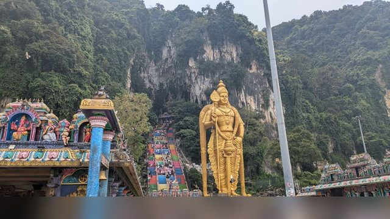
23 AugThe gold figure and the coloured staircase only fit into one frame from the forecourt.- 23 AugAt the top the view back is worth more than the staircase itself.
- 23 AugThere is a whole temple inside the cave, and the light comes from above.
What did not work 2
The route
Eight stops between Singapore and the north of Borneo. The journey out via Frankfurt and Bahrain lies outside the frame. The 56 first-hand entries hang off the stops — a second way into the text, by place instead of by topic.
The map tiles come from OpenStreetMap. Loading them tells openstreetmap.org your IP address — so it happens on your click, not before.
- Singapur215–17 Aug · 5–7 Sep
- Johor Bahru417 Aug · border and Larkin Sentral
- Mersing1417–18 Aug · ferry port for Tioman
- The long-distance bus stops right at the Plaza D'Jeti ferry terminal.
- The town is full of cats.
- There is a Tamil temple from 1892 in the middle of town.
- The town centre is a village, not a small town — timber houses on stilts, and the jungle starts at the kerb.
- "Village" is only half of it — people in Mersing also live in two-storey blocks of flats with a playground out front.
- The BSN cash machine in Mersing paid out, on a travel credit card and with no fee.
- RM500 was the amount, and that is tighter than it sounds.
- In the late afternoon the town happens on the seafront promenade.
- And this is what it looks like (17 Aug, 18:20 local).
- The fees are not collected in the terminal but in an office near the jetty.
- Only the marine park fee was charged.
- The waiting hall is an open pavilion, not a building.
- You board from the pontoon, right alongside the hull.
- A mamak stall in Mersing charges RM 6.50 to RM 11.00 for a full plate, and RM 3.50 for breakfast.
- Tioman2418–21 Aug
- RM800 was the answer, for four people across three island days.
- The place we stay sits directly on the sand.
- The bay is shallow and calm, and the jetty at the far end is in sight.
- The place is called Coral Reef Holiday Resort, and breakfast is served on the sand.
- The breakfast pancake is a rolled crêpe with banana.
- The bay is not one continuous beach, and late in the morning it is empty.
- The rainforest starts right behind the houses of Tekek.
- The village road in Tekek is a concrete strip, and not much drives along it.
- A board on the waterfront in Tekek sorts the whole island at a glance.
- Flying foxes hang in the needle trees along the shore in Tekek, dozens of them.
- The duty-free shop in Tekek sells cognac in three-litre bottles — and it costs more than at home in Germany.
- A dismantled light aircraft lies among the building materials in the village.
- A white cat with two differently coloured eyes.
- Almost every cat here has a short, often kinked tail.
- The path to Juara is largely built, not worn.
- A yellow wildlife department sign stands beside the path.
- A grey pipe follows the path, and it carries red paint marks.
- A monitor lizard lay on the path.
- The path runs through closed forest, and a stream crosses it.
- An iridescent blue butterfly lay on the forest floor.
- Juara greets you with a masonry arch over the village road.
- Juara has a board about the flying foxes — and it confirms what was only looked up above.
- Juara faces the open sea, and you see it at once.
- Petrol comes from the shop, in bottles, for RM 4.00.
- Kuala Lumpur1222–24 Aug
- You come into the centre on an elevated road, and the first tower is not the one you expect.
- From the window you see the telecoms tower, not the Petronas Towers.
- Here the flag hangs down half a facade.
- The Petronas Towers stand on an ordinary street.
- In the evening the towers stand behind the flags at Saloma.
- The Green Line is the shopping line.
- The app for the bus is called GOKL and comes from the city council.
- From Jalan Hang Kasturi, Merdeka 118 stands at the end of the street.
- The gold figure and the coloured staircase only fit into one frame from the forecourt.
- At the top the view back is worth more than the staircase itself.
- There is a whole temple inside the cave, and the light comes from above.
- Macaques run along the wall beside the path.
- Sandakan25–28 Aug · Sabah
- Kota Kinabalu29 Aug – 3 Sep
- Kudat4–5 Sep · Tip of Borneo
How to read this document
Every point carries a mark. That is the most important part of the document:
- ✓ we did it ourselves — we did this, it worked this way. Date follows.
- ○ looked up beforehand — from a solid source, but we have not checked it ourselves. May be right, may be out of date.
- ✗ did not work — so that nobody tries it twice.
A travel report that mixes the two is worth nothing: the reader can then no longer tell, for a single sentence in it, whether there is an experience behind it or a web page.
Getting around Singapore
From Jalan Besar to Gardens by the Bay: 33 minutes, at seven in the evening (16 Aug). Measured between "we're at Jalan Besar" and "we're at the garden", so including the walk to the station and the walk at the far end. By MRT, Downtown Line, six stops to Bayfront.
The direction of travel is the trap, and it costs you the connection. The Downtown Line runs in an arc: Bayfront (DT16) lies geographically south of Jalan Besar (DT22), but the right train goes towards Bukit Panjang, which looks like north. On the platform, look at the station numbers, not at the compass. From Bayfront: exit B, underpass, then Dragonfly Bridge or Meadow Bridge.
Garden Rhapsody in the Supertree Grove — free, no ticket, and you simply stand underneath it (16 Aug). No barriers, no rows, no admission: the audience spreads across the plaza between the trees and a lot of people lie flat on their backs, because the show plays upwards. You need no particular spot for a photograph — you need distance, because up close a single Supertree fills the entire frame. In the wide shot below a good number of umbrellas are up in the crowd, so the show carries on in the rain. (That is read off the picture, not something we reported.)
Telegram 17 Aug, 09:39live on this page 17 Aug, 09:5011 min
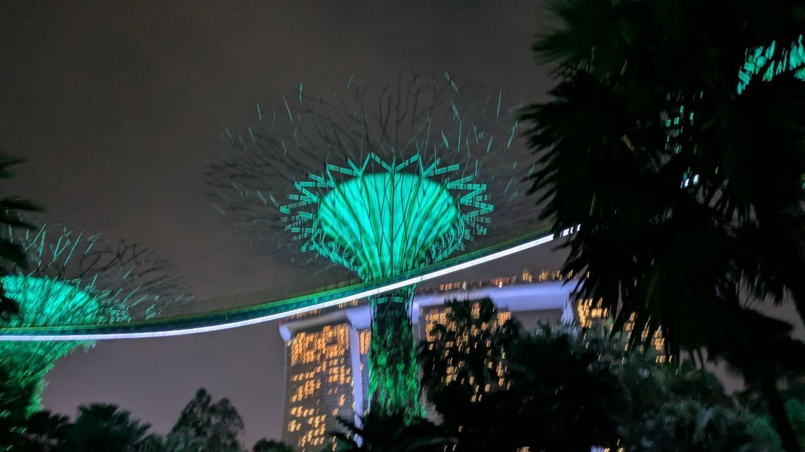
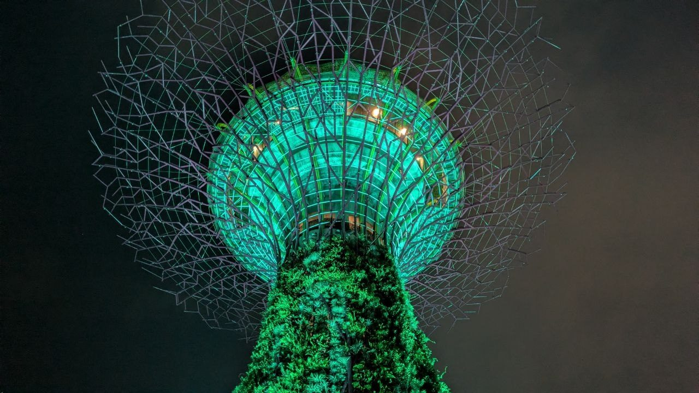
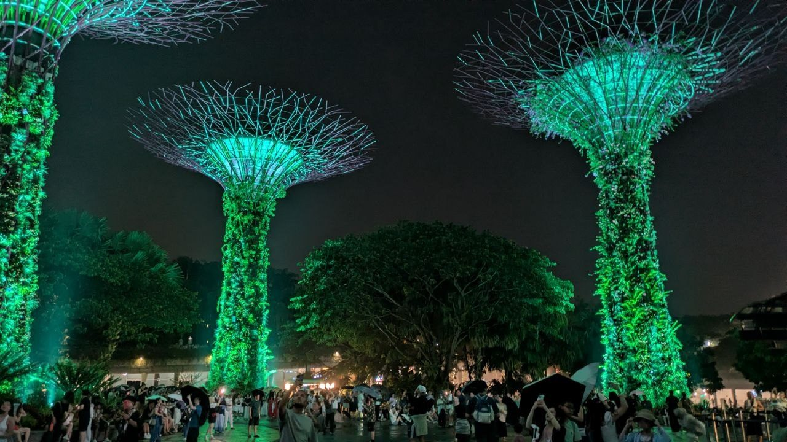
2 looked-up notes — not checked ourselves
The second light show is called Spectra and sits 800 metres away. Water, light and lasers, at 20:00 and 21:00 on the Event Plaza at Marina Bay Sands, right at the station exit; Garden Rhapsody runs at 19:45 and 20:45. Fifteen minutes each. You can do both in one evening: 20:00 Spectra, ten minutes' walk, 20:45 Garden Rhapsody. We only went to Garden Rhapsody — what stands here about Spectra has stayed research.
From the airport into town, the luggage decides, not the price. MRT S$2.20 per person (45–50 min, two changes), taxi S$25–45 including the S$6 airport surcharge, a six-seater from the fixed-price counter for S$75. A normal taxi seats four people but does not take four suitcases for three weeks — then it is two cars or a six-seater, and comparing fares alone gives you the wrong answer.
Border Singapore → Malaysia
On a Monday morning we were through on the Malaysian side by about 12:00 local time (17 Aug). We set off from Little India. How long the control itself took is not recorded — other people's experience is that almost all of the time goes on queueing rather than on the distance; the Causeway is a good kilometre long.
Telegram 17 Aug, 04:01live on this page 17 Aug, 05:46106 min
The signage in the border hall is already there. After the control you stand in front of
signs reading ↑ JB Sentral. JB Sentral is the station directly next to the border building
and the place everything continues from — bus, taxi, train, all of it there. You do not have
to ask anyone.
Telegram 17 Aug, 04:04live on this page 17 Aug, 05:46103 min
A bus runs from JB Sentral to Larkin, and it is the easiest way (17 Aug). Larkin Sentral is the long-distance bus station from which you go on into the country — about 5 kilometres from the border building. The bus from JB Sentral takes contactless cards and Google Pay, see “Paying” below. What you will usually be recommended is a Grab for around RM20; the bus does the same thing for a fraction of it.
Telegram 17 Aug, 04:47live on this page 17 Aug, 05:4660 min
5 looked-up notes — not checked ourselves
You cannot order a Grab at the border building itself. The pick-up point would be the ground floor of JB Sentral next door. Open the app inside the hall and you will find no car.
Walking across the Causeway is illegal on the Malaysian side (RM300–2000, signs since April 2026). Singapore does not forbid it, but you would be entering the other side — so it is not an option, however short the walk looks on the map.
Going through by car remains the most comfortable variant with luggage. Grab has been
crossing the border under its own licence since 4 May 2026 (SG>JB (Beta) in the app, book
6 hours to 7 days ahead). In the car everyone stays seated at both controls, passports go
through the window, fingerprint and face scan happen in the vehicle, the luggage stays in the
boot. On the bus you get out twice with everything you own. A six-seater is around S$120 = 81
euros from the hotel door to Larkin Sentral.
The Malaysia Digital Arrival Card (MDAC) is compulsory at the land border too. There is
no exemption for Germans, it is free, available at the earliest 3 days before arrival, and
only at imigresen-online.imi.gov.my/mdac/main — paid imitations rank above it on Google,
so type the address rather than clicking a search result. You need your passport, the arrival
date, the Malaysian accommodation address, an email address and a phone number.
The trap when reading up on it: almost every hit for "MDAC exemption" is about Singaporeans
and reads like an all-clear for everybody.
Singapore has the same thing (SG Arrival Card), and it applies per entry. If, like us,
you enter twice, you need it twice. Free, at the earliest 3 days ahead, only
eservices.ica.gov.sg/sgarrivalcard or the MyICA app.
From the border to Mersing
From the border to the ferry terminal in Mersing: a good four hours (17 Aug). Measured between "we're through the control" at 12:01 local time and the photo of the ferry terminal at 16:11 — that covers everything: the way to Larkin, the waiting and the ride itself. If you want to catch the ferry to Tioman on the same day, budget half a day for this leg.
Telegram 17 Aug, 08:11live on this page 17 Aug, 08:177 min
The long-distance bus stops right at the Plaza D'Jeti ferry terminal (17 Aug). Terminal, ticket counters, shops and the bus forecourt are all on the same square; between getting off the bus and reaching the ferry counter there is no transfer and no second ride.
In mid-August Johor is covered in flags (17 Aug). Malaysian flags and the Johor flag on fences, poles and house walls, in small towns too. The national holiday, Merdeka, is on 31 August and the decorations go up weeks ahead — good for photographs, and a warning that the end of August means busy roads and holiday traffic.
In Mersing
The town is full of cats (17 Aug). Jens's message about it was one sentence: "we love all the cats". The photographs show three different animals in three places in the town centre, all well fed, none of them running away: a black one in the shade under a market cart, a ginger-and-white one stretched out asleep across a tiled floor, a black-and-white one glancing over as it walks past. This is not a quirk of the day — it is what a small Malaysian town looks like.
Telegram 17 Aug, 08:59live on this page 17 Aug, 09:4041 min
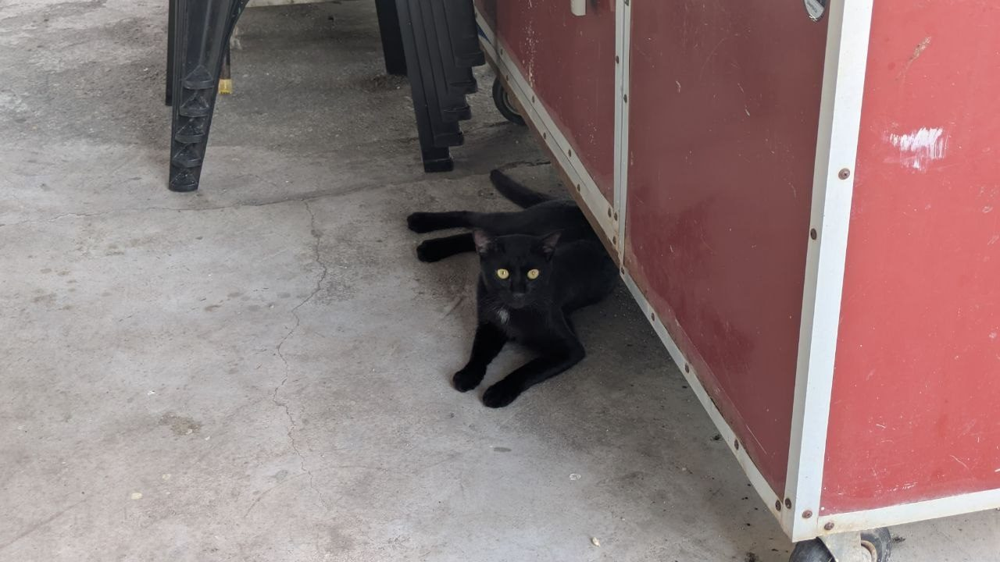
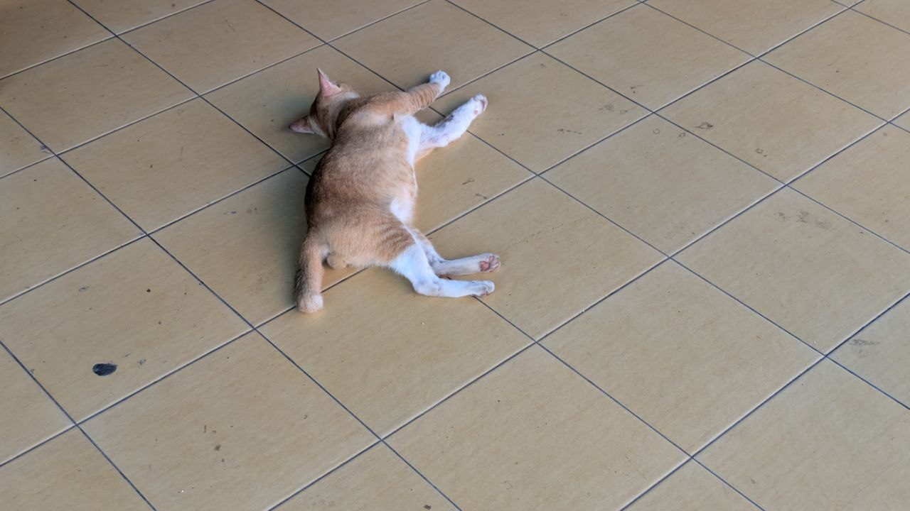
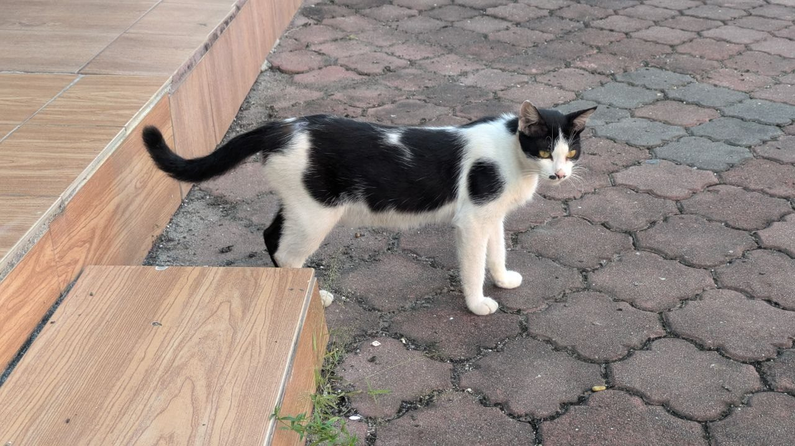
There is a Tamil temple from 1892 in the middle of town (21 Aug). The date is on the building itself: above the entrance, under the Tamil line, "KUIL SRI SUBRAMANIAR (1892)". Anyone who takes Mersing for nothing but a ferry stop is about 130 years out. The tower is covered from top to bottom in painted figures, and it does not stand apart — it is right on the street among houses, power lines and parked cars, so in the town centre you walk past it almost unavoidably. We saw it from the outside; whether and when it is open we did not check.
Telegram 21 Aug, 11:10live on this page 21 Aug, 11:166 min
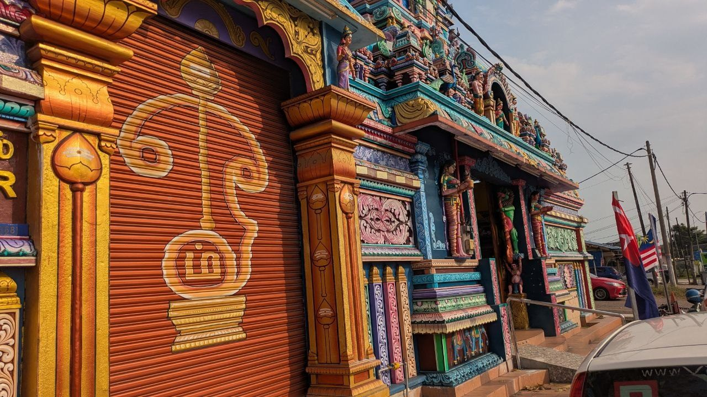
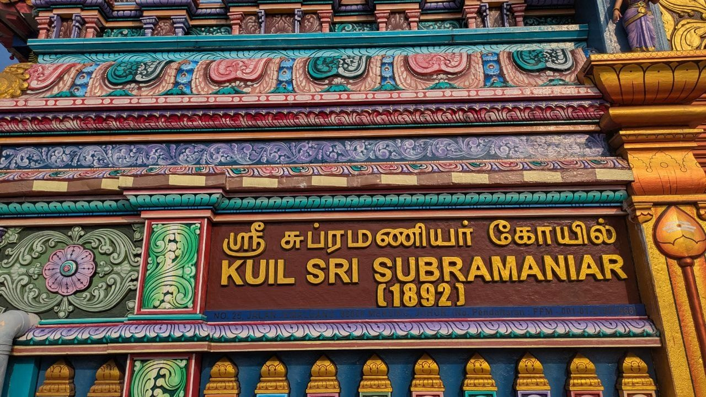
The town centre is a village, not a small town — timber houses on stilts, and the jungle starts at the kerb (22 Aug). Walking through Mersing early in the morning: a grey timber house up on posts behind coconut palms, next to it a pale blue cottage with a red tiled roof and a grilled veranda, both lived in and in use rather than done up. Between the plots sits waste ground with high grass, and where the road ends the dense growth begins with nothing in between — trees, creepers, no fence. If you book Mersing as a stopover, know that you are sleeping in a village, not in a small town with a centre. Jens sent the pictures without a line of text, so what he did there is not recorded here.
Telegram 22 Aug, 00:11live on this page 22 Aug, 00:2616 min
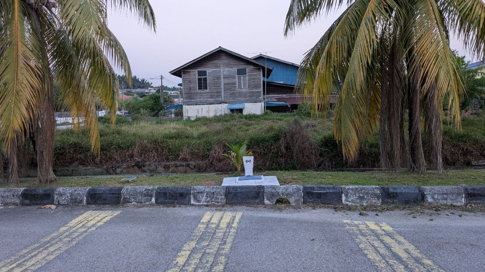
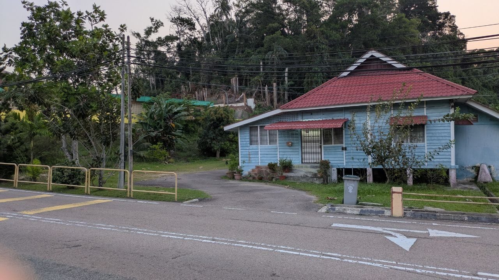
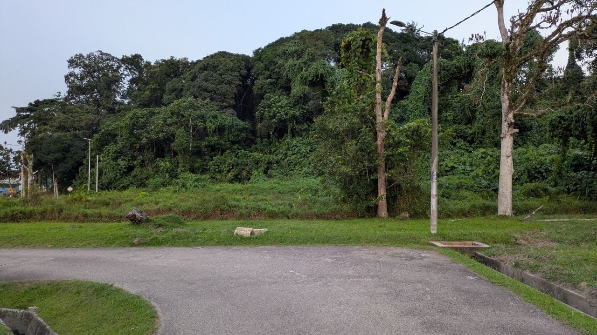
"Village" is only half of it — people in Mersing also live in two-storey blocks of flats with a playground out front (21 Aug). A few streets on stand two identical residential blocks, cream walls under red metal roofs, washing and potted plants along the open access balconies, cars parked underneath. In front of them: mown grass, a concrete storm drain, a fence, street lights — and round the next corner a playground with yellow and blue equipment on a surfaced residential street. This is not a kampung that grew on its own, it is a planned and maintained housing estate. Judging the place by the stilt houses alone sells it short: Mersing has both side by side, and the residential part is the larger one. These pictures came without any text either.
Telegram 21 Aug, 11:09live on this page 22 Aug, 02:04895 min
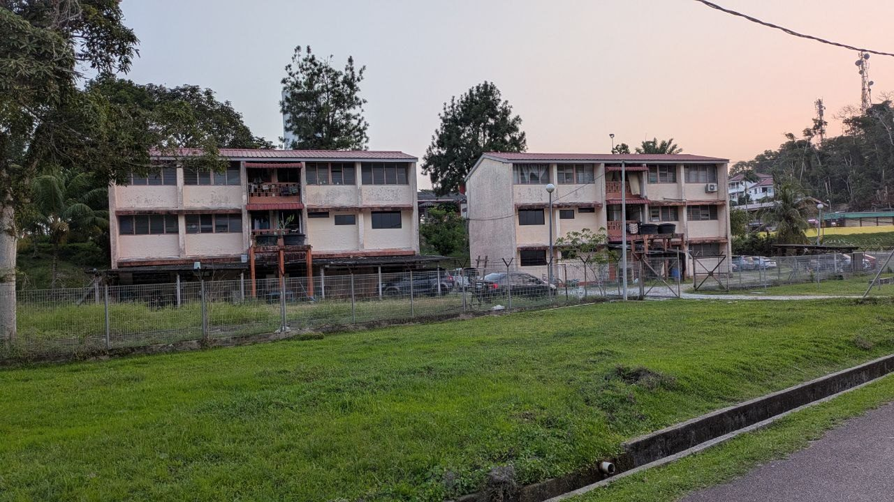
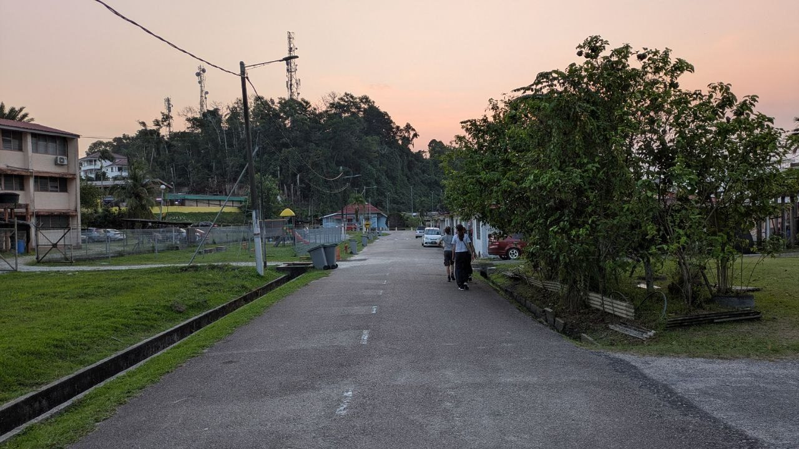
Petting them is harmless here — on Borneo it is not, and not in the part most people assume. Peninsular Malaysia, which includes Johor and Mersing, has been officially rabies-free since July 2013; the last human case was in 1998. Sarawak, by contrast, has had an ongoing outbreak since 2017 that is still killing people: between January and mid-September 2025 it recorded 13,894 animal bites, and 59.7 % of them came from cats, not dogs. Sabah — Sandakan, Kota Kinabalu, Kudat — is likewise considered rabies-free. The two states sit on the same island and are constantly mixed up. So before touching a cat on Borneo, know which of the two you are standing in; and after a bite or a scratch the rule is the same everywhere: see a doctor straight away, do not wait.
The BSN cash machine in Mersing paid out, on a travel credit card and with no fee (17 Aug). This is the most useful line in the section, and it contradicts what we had assumed beforehand (see "Paying"): the card was not refused, no foreign-card fee was charged — and it happened at the very bank we had warned against. Anyone carrying a travel credit card without a foreign transaction charge needs no money changer for Mersing and does not have to stock up on cash in Johor Bahru.
Telegram 17 Aug, 08:59live on this page 17 Aug, 09:4041 min
RM500 was the amount, and that is tighter than it sounds (17 Aug). RM165 of it is already committed: RM105 marine park fee at the ferry counter in Mersing and RM60 tourist tax at the accommodation on Tioman. That leaves RM335 for four people across three island days — breakfast is included at the guesthouse, boat rides between the bays and a snorkelling trip are not. We had budgeted RM800–1,200 for those, but that figure is an estimate and carries no source. Anyone who would rather not find out tops up in Mersing while five banks still stand side by side; on the island there is exactly one machine, and an island machine can be empty.
Telegram 17 Aug, 09:36live on this page 17 Aug, 09:404 min
RM800 was the answer, for four people across three island days (21 Aug). Our estimate of RM800–1,200 was right at its lower end: RM267 a day for four, about 169 euros for the whole island stay. What matters more than the number is where it applies — on Tioman almost no stall and no small restaurant takes a card, it is the most cash-dependent place on this trip. In Kuala Lumpur and Kota Kinabalu the card carries most of it. Anyone extrapolating RM267 across three weeks will withdraw far too much.
Telegram 21 Aug, 10:04live on this page 21 Aug, 10:118 min
2 looked-up notes — not checked ourselves
With a fee-free card, stocking up on cash does not pay. This is not an experience but the conclusion that follows from the two ticks above: if the withdrawal costs nothing, a large amount saves nothing — it only ties up cash you then carry through a bus ride and three cities. What changes that calculation is not the fee but availability: before an island or a rural tour, once too much beats once too little.
No fee is not the same as no interest. On many credit cards a cash withdrawal counts as a cash advance and accrues interest from the day it is taken, even when no fee is charged; some travel cards waive both, others only the fee. That is written in the card terms, not on the machine. We did not look it up for our own card — it is the only point in this section we have not checked ourselves.
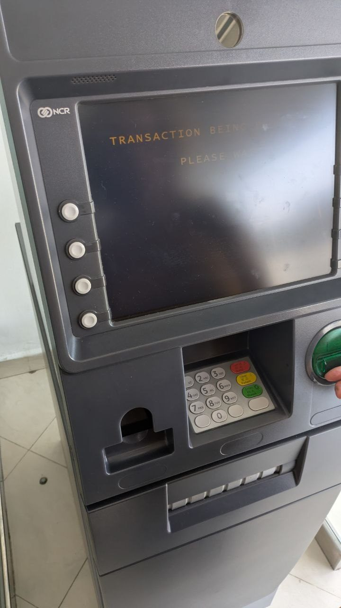
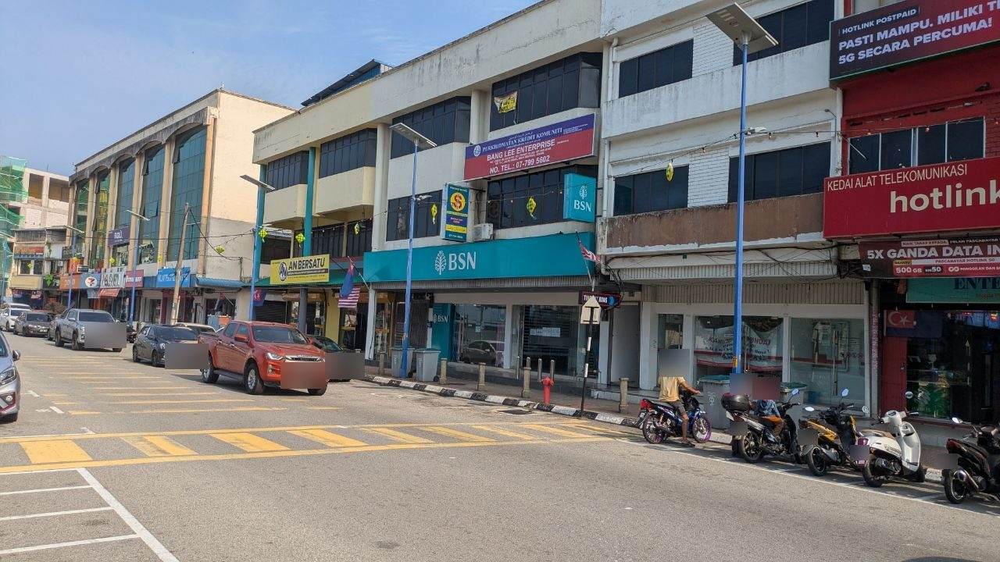
The conspicuous empty building in the town centre used to be a cinema. The lettering above the entrance has worn away to the shadows of its letters, but the last word clearly ends in THEATRE, and the windowless block on the roof is the tower that held the projection and stage machinery of old picture houses. No open source gives up the name. One trail does lead on: Mersing has a locally famous noodle stall called Mee Goreng Panggung Wayang — literally "cinema fried noodles" — which by local account once stood inside the cinema itself; it is on Google Maps as "Panggung Cafe Mersing". That does not prove it was this building.
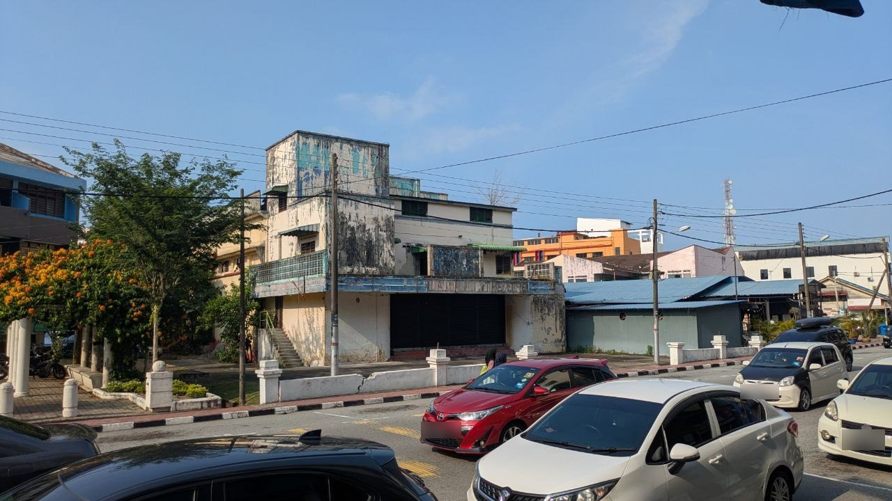
In the late afternoon the town happens on the seafront promenade (17 Aug). A paved path between coconut palms and the sea, pavilions to sit in, playground equipment, and behind it the road with the parking spaces. In the photo families are walking, children are cycling, and the flags for Merdeka are already up on the masts. If you are waiting for the ferry in Mersing and do not know where to go: here — this is where everyone is in the evening. (Read off the picture, not reported by us.)
Telegram 17 Aug, 10:21live on this page 17 Aug, 10:3817 min
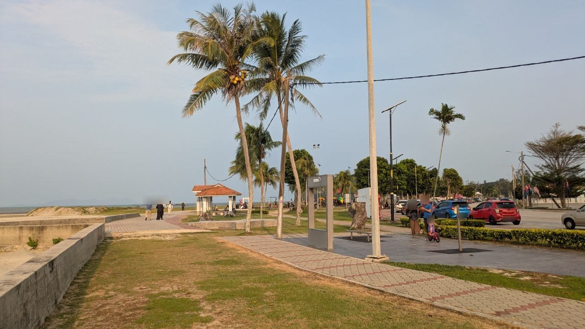
Mersing to Tioman — what has to be done before boarding
A ferry is not a train. Between the terminal and the boat there are several counters, two of them cash only, and the departure time is not set by a timetable but by the tide. This section was written the evening before, which is why every point carries a ○ — what actually happened goes in here on 18 Aug.
The departure time follows the tide and changes every day. Mersing's harbour basin is shallow; the ferry can only leave when there is enough water under it. The published August schedule therefore shows something different on every date: 08:30 and 13:00 on 15 Aug, only 10:00 on 16 Aug, 10:30 and 15:00 on 17 Aug, 11:30 on 18 Aug. Anyone taking the departure time from a guidebook or from last week is planning against the moon — and the operator says itself that the schedule may change without notice. The second harbour, Tanjung Gemok (many bookings still carry its old name, Teluk Gading), is 40 kilometres north and does not have the problem, because the water there is deep enough. Both harbours serve Tioman, but only one of them is on your ticket.
And this is what it looks like (17 Aug, 18:20 local). On the evening before the crossing the small boats on the far bank were sitting in the mud while the two larger boats at the pontoon were still afloat. That is not storm damage and not a bad day — it is the ordinary tidal range, and it is the reason the departure time in Mersing is different every day. Once you have seen it, the timetable explains itself.
Telegram 17 Aug, 10:21live on this page 17 Aug, 10:3817 min
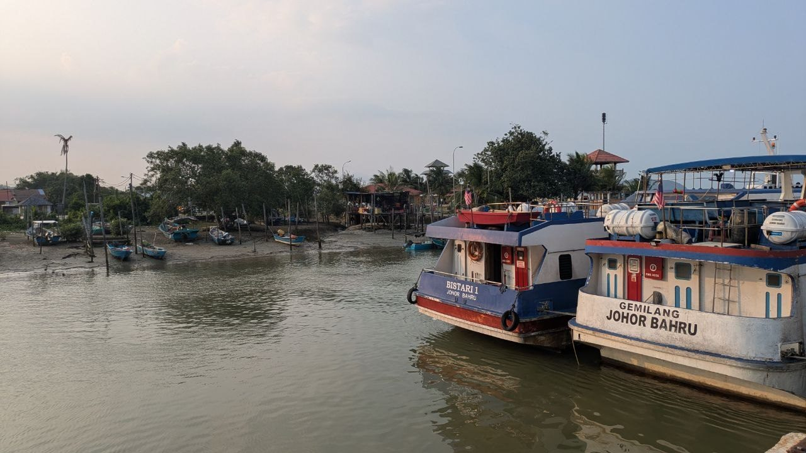
The Jabatan Laut, Malaysia's marine department, sits on the same quay. The building with the small green tower stands right at the river mouth. It is not a place travellers need — but it does show that these are not only pleasure boats: Mersing is a working harbour with a fishing fleet, and the ferries share the water with it.
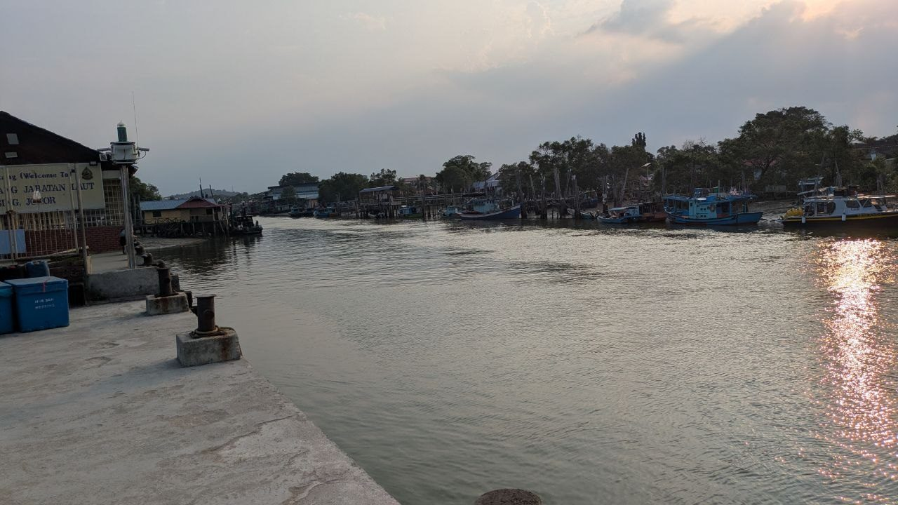
Three counters, and the order is fixed.
- Ferry counter. The online booking is exchanged for boarding passes. Every traveller's passport is scanned and registered; one person cannot do it for the group.
- Marine park counter. Cash, on presentation of the ferry tickets. Keep the receipt: the places to stay on Tioman ask for it at check-in, and it covers the whole stay.
- Johor fee counter. Its own counter and its own amount — although on 18 Aug it was not charged at all, see below.
The fees are not collected in the terminal but in an office near the jetty (18.08.). Jens reported it on the morning of the crossing: the office sits away from the terminal building, with a pavilion in front of it — that is how you find it. So the boarding passes come from one place and the fees are paid at another. That is an extra walk, and it was not in our plan further down. Which fee is charged there is two paragraphs on; the amount is still open.
Telegram 18 Aug, 02:12live on this page 18 Aug, 02:165 min
The fees, and the one where the sources disagree. The marine park fee is not in dispute: foreigners pay RM30 as adults and RM15 as a child aged 6 to 12, under 6 free, over 60 also RM15 (rates published by the Malaysian Department of Fisheries). For the four of us — three adults and a twelve-year-old — that is RM105. On top of it comes a Johor national park fee of RM20 per adult, explicitly charged only on departures from Mersing, not from Tanjung Gemok. For the child rate one source says RM5 and another RM10, so for us it is either RM65 or RM70. And the author of one very thorough guide writes that he never met it in practice. That is the reason to carry it in cash anyway: not being charged costs nothing, not having it costs you the ferry.
Only the marine park fee was charged (18 Aug). That settles the question the sources disagree about in the paragraph above: at the office by the jetty the marine park fee was the only thing collected — no second amount and no second counter. The author of the guide who wrote that he never met the Johor fee in practice turns out to be right. We would still carry it in cash: one Tuesday morning in August does not overturn a published schedule of fees, it only shows that on that day, at that spot, nobody collected it. What the marine park fee came to in the end goes here as soon as it is reported.
Telegram 18 Aug, 02:19live on this page 18 Aug, 02:3920 min
3 looked-up notes — not checked ourselves
Both fees cash only — and there is no cash machine in the terminal. The nearest ones are 400 to 494 metres away, five to seven minutes on foot (calculated from OpenStreetMap coordinates, not paced out). Five banks stand next to each other there, and for anyone staying in the town centre the distances invert: from Jalan Abu Bakar it is 85 metres to Bank Simpanan Nasional and 90 to Public Bank. So you draw the cash before checking out, not on the way to the boat. Ask for small notes: the fee counters keep little change.
When you have to be there. The ticket hall is open from 07:30 to 20:00. Check-in starts one hour before departure, boarding passes are sometimes handed out only 30 minutes before, and you should be standing on the pontoon 30 minutes before. The usual advice is 60 minutes off season and 90 during the school holidays. More than an hour and a half buys nothing, because nobody is at the counter before that.
The crew take your luggage as you board and ask where you are getting off. On Tioman the boat calls at several villages — Genting, Paya, Tekek, ABC, Salang. If you cannot name your village on the spot, you will be looking for your bags in the wrong bay.
The waiting hall is an open pavilion, not a building (18.08.). A tiled roof on posts, open at the sides, ceiling fans overhead, fixed rows of seats, two screens with the departures. There is no air conditioning here and there cannot be — anyone counting on a cooled hall is dressed wrong for the midday wait. The shade is the whole offer, and it is enough.
Telegram 18 Aug, 03:32live on this page 18 Aug, 03:419 min
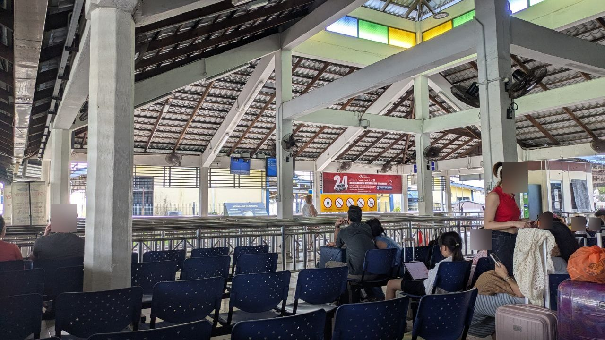
You board from the pontoon, right alongside the hull (18.08.). The queue stands under a canopy, everyone still carrying their own luggage. The boat is a catamaran and the operator is Cataferry — the name is painted in large letters on the side, so you can tell from the pontoon whether you are standing at the right boat.
Telegram 18 Aug, 03:32live on this page 18 Aug, 03:419 min
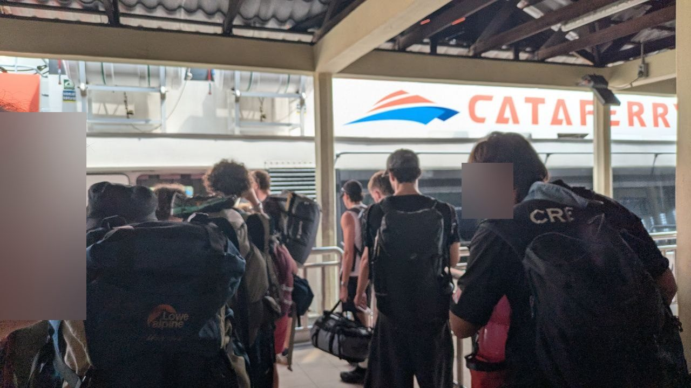
You travel in an enclosed cabin, not on deck (18.08.). Airline-style seating, screens on the bulkhead, a board on the wall listing the forbidden items. A safety video about the life jackets runs before departure. Whatever you need during the crossing therefore belongs in the bag at your seat, not in the luggage you hand over as you board. At 11:32 local time we were in our seats, with departure scheduled for 11:30 — the timings in the table below held all the way to the seat.
Telegram 18 Aug, 03:32live on this page 18 Aug, 03:419 min
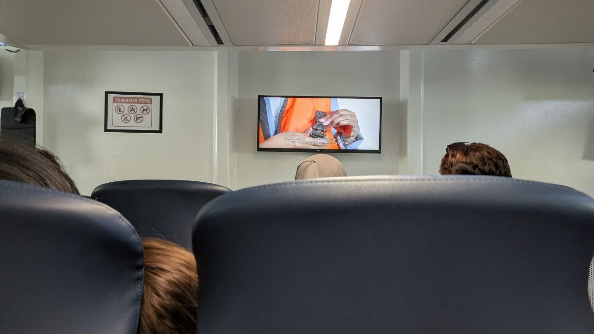
The order we are going to work through tomorrow — ferry at 11:30.
| Time | What |
|---|---|
| 09:00 | Draw cash, 85 metres from the door, at the machine that worked yesterday. Ask for small notes |
| 09:45 | Check out (possible until 12:00, but the rest of the morning should not hang on it) |
| 10:00 | At the terminal. Passports to hand, collect boarding passes |
| 10:20 | To the office by the jetty, the one with the pavilion in front: marine park fee in cash, receipt filed with the passports. The Johor fee was not asked for |
| 10:45 | Food and toilets — both at the terminal, neither on the boat |
| 11:00 | On the pontoon. Hand over luggage, name the village: Tekek |
| 11:30 | Cast off |
On Tioman — what we expect to find
This section was written before we arrived, so almost all of it is still ○. What we have seen for ourselves since 18 August stands at the top with ✓; the ○ lines below are still waiting to be checked.
The place we stay sits directly on the sand (18.08.). Not a hotel building but a row of white cabins side by side, each with its own door onto the beach. Between the bottom step and the water there are a few paces of sand and no road. Kayaks lie in front of the doors for guests, and hand-painted signs on a tree point towards breakfast and showers. Anyone expecting a lobby and a reception desk will look in vain: the door of the cabin is the entrance.
Telegram 18 Aug, 06:56live on this page 18 Aug, 07:037 min
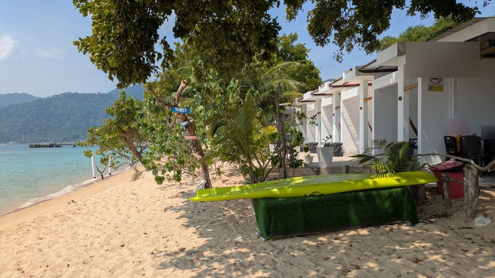
The bay is shallow and calm, and the jetty at the far end is in sight (18.08.). Bright water without waves, clear a long way out, forested hills running down to the shore behind it. A hammock hangs between two posts at the waterline. Just before 3 pm local time the beach was empty. At the far end of the bay stands a long jetty with a few roofs in front of it — from here that is all one can make out.
Telegram 18 Aug, 06:56live on this page 18 Aug, 07:037 min
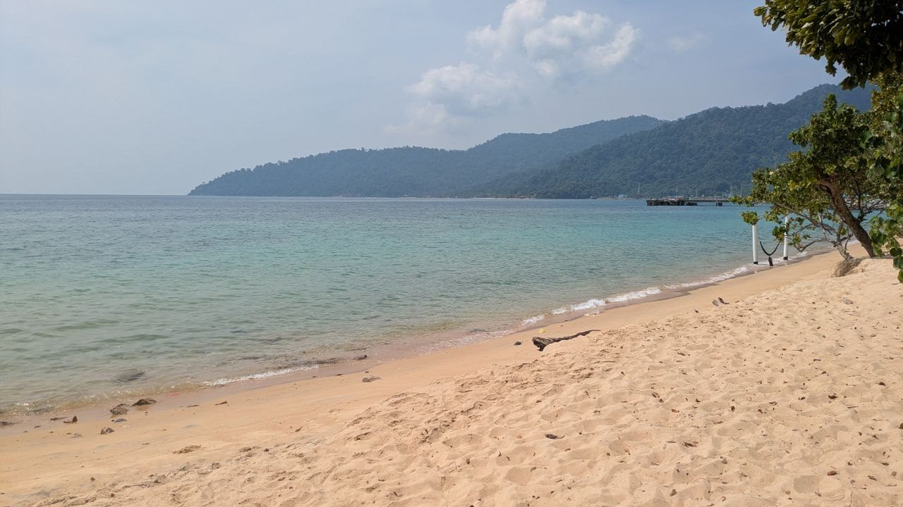
The place is called Coral Reef Holiday Resort, and breakfast is served on the sand (19.08.). Until now the name stood here as "Coral Beach or something" — that is settled. The tables stand outdoors between the palms and the waterline, white cloths, black plastic chairs, a parasol among them. Behind the tables runs a line of pale boulders as a breakwater, and behind that the turquoise water of the bay. Breakfast came with two tall glasses of fruit drink, one magenta from dragon fruit, one pale yellow. Whether they are included or paid for separately is not measured here — breakfast itself is included according to the booking.
Telegram 19 Aug, 03:26live on this page 19 Aug, 03:304 min
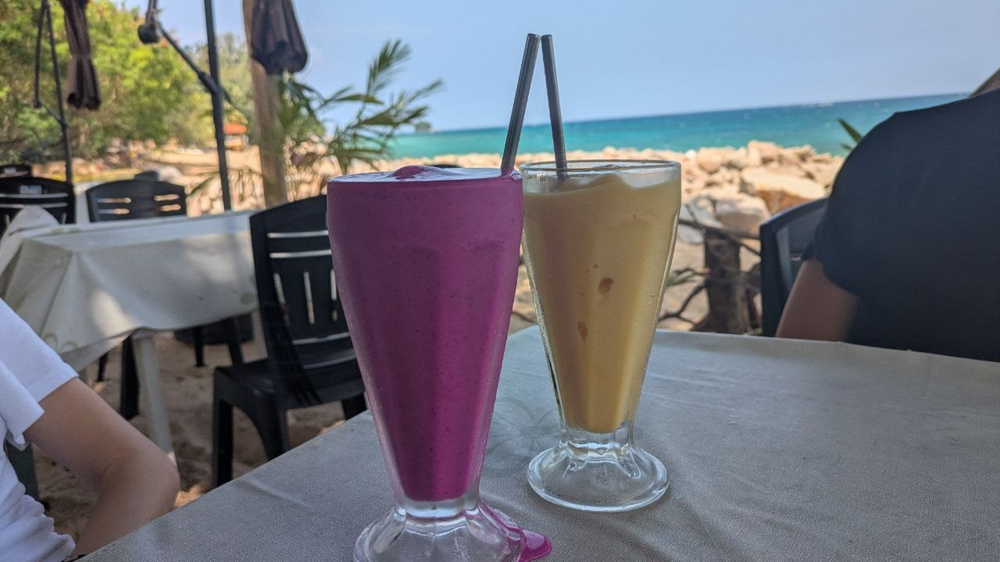
The breakfast pancake is a rolled crêpe with banana (19.08.). Not a stack of American pancakes but a thin sheet of batter, rolled up, dusted with icing sugar and topped with three slices of banana. The filling is pale brown and coarse; the photo does not say what it is. With it comes coffee in a glass mug and a bottle of amber syrup or honey on the table. Nothing savoury is on the plate — no egg, no toast, no bacon. Whether you can ask for that, we did not ask.
Telegram 19 Aug, 03:48live on this page 19 Aug, 03:535 min
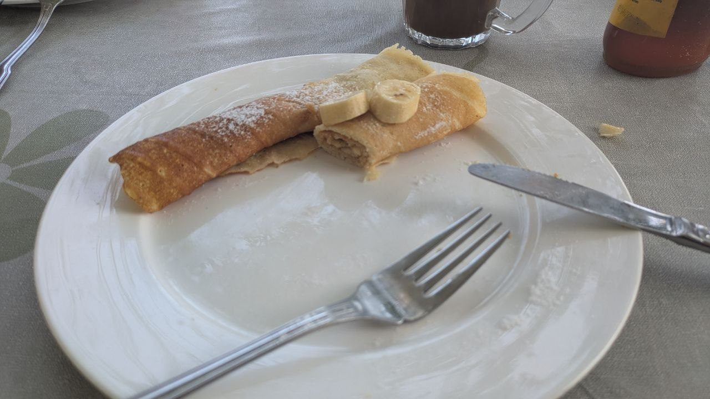
The bay is not one continuous beach, and late in the morning it is empty (19.08.). One stretch of the shore is armoured with a bank of pale boulders, several metres wide — anyone expecting a single unbroken sweep of sand is wrong at that spot. Next to it the sand starts and runs in a shallow curve along the bay to a wooded point, where a pavilion with an orange tiled roof stands on yellow-painted posts. Far out beyond the bay lies a small wooded rock island. Along the tree line a few things sit in the sand: a black net, an old sack, a pale sheet of metal — nothing here is raked. Just before twelve local time there was not a single person on the beach.
Telegram 19 Aug, 03:48live on this page 19 Aug, 03:535 min
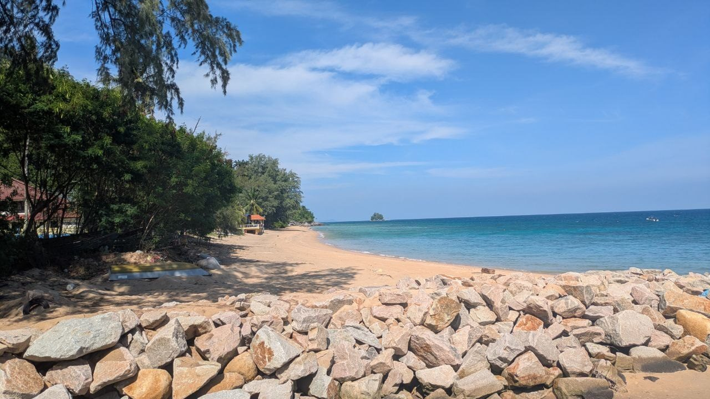
The rainforest starts right behind the houses of Tekek (18.08.). Behind the row of houses at the edge of the village the slope rises straight away, densely overgrown up to the ridge, with single tall trees standing out above the canopy. Between the last roof and the forest there is neither a field nor a garden. Stand on the village road and you have corrugated iron roofs on one side and the forest on the other.
Telegram 18 Aug, 09:43live on this page 18 Aug, 10:0724 min
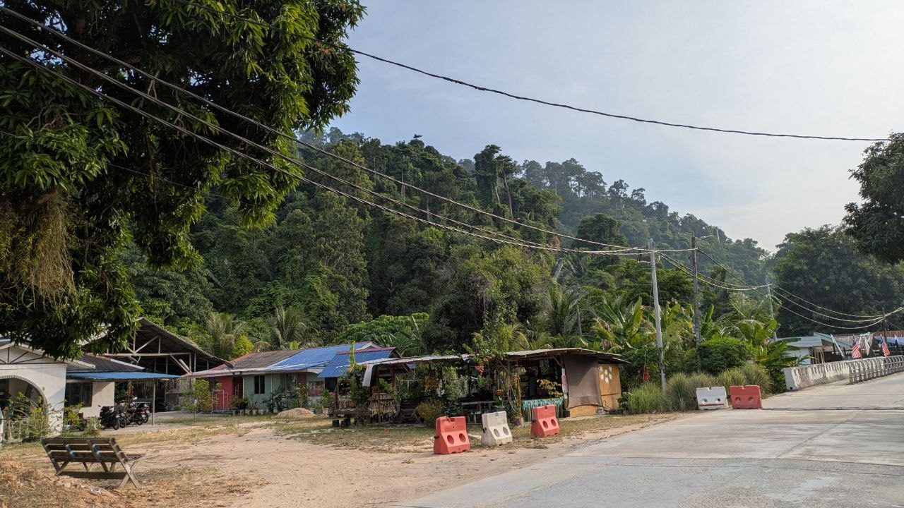
The village road in Tekek is a concrete strip, and not much drives along it (18.08.). One lane wide, orange and white plastic barriers along the edges, small shops under metal roofs between them, a blue gazebo with a chest freezer in front of it and a bridge with a white railing. On the road: one scooter, a goat crossing it, and a single pickup with a company decal on the door. Malaysian flags hang from poles and fences.
Telegram 18 Aug, 09:43live on this page 18 Aug, 10:0724 min
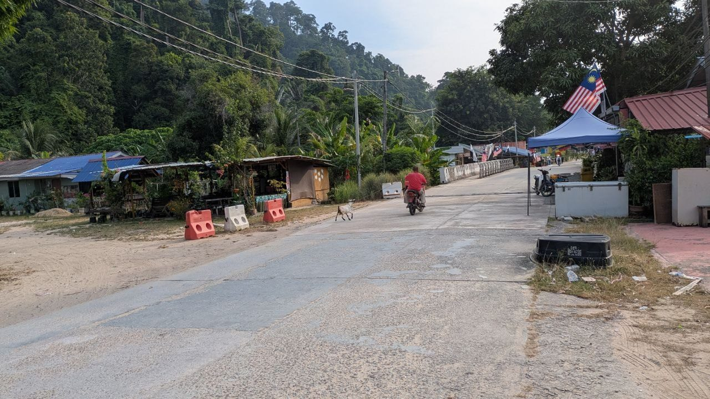
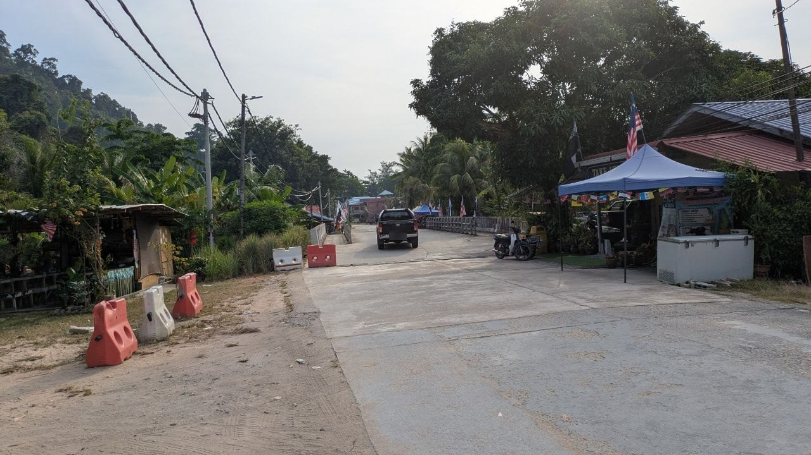
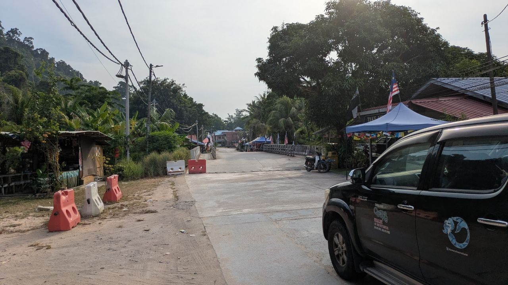
The flags are up because of the month. Malaysia celebrates its independence day, Hari Merdeka, on 31 August; throughout August national and state flags hang from houses, fences and street poles. On that day we will be in Kota Kinabalu.
A board on the waterfront in Tekek sorts the whole island at a glance (18 Aug). A blue frame with "Pulau Tioman" down the side in large letters, holding a drawn map with one box per village. Tekek: the marina, the marine park centre, a golf course, the jungle path across the island to Juara, and a zip line at Keluang. Salang in the far north: a whale rock sculpture and the forest track over from Panuba. Juara on the east side, the only village facing the open sea: two waterfalls, a viewpoint, a surf school. Nipah and Mukut in the south: a cave, kayaking, the Asah waterfall and a via ferrata on Gunung Nenek Semukut. Between the villages lie the dive islands — Chebeh, Tulai, Labas, Sepoi, Soyak, Renggis, Jahat — each marked with a diver or snorkel symbol. Whether any of it holds up goes here once we have seen it ourselves.
Telegram 18 Aug, 10:18live on this page 18 Aug, 10:246 min
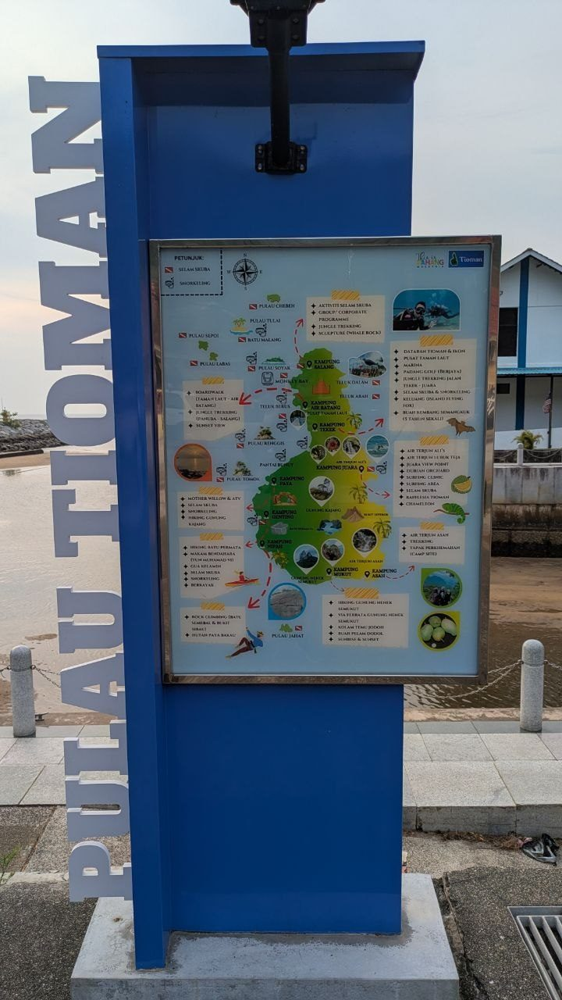
Flying foxes hang in the needle trees along the shore in Tekek, dozens of them (18 Aug). Just before half past six in the evening, a good hour before sunset, they are still there: dark bundles on the thin branches, head down, each wrapped in its own wings, three or four side by side on some boughs. More than sixty can be counted individually in the enlarged crops; where they hang densely they merge into one another, so the colony is larger. The strip of trees stands between the concrete path and the sand, with the beach behind it. From the path you only see them if you look up — from below they are shadows in the branches.
Telegram 18 Aug, 10:30live on this page 18 Aug, 10:378 min
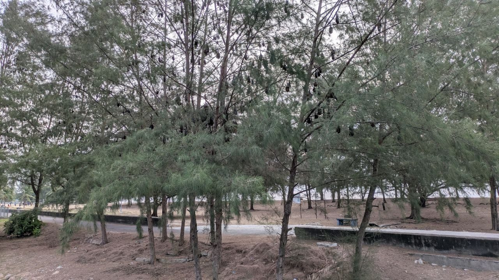
3 looked-up notes — not checked ourselves
They are island flying foxes, and this strip of trees is one of only two roosts on the whole island. The species on Tioman is Pteropus hypomelanus, the island flying fox. A count running from March to October 2015 found the animals in exactly two places: Tekek and Juara. It came to 675–1,033 animals in Juara and 2,178–5,385 for the entire island, so the larger share hangs here. The international red list rates the species as not threatened, the Malaysian one as endangered, and the population is falling. Which species hangs there is not settled by the photograph but taken from the study (Aziz et al., Human Ecology 2017).
These animals pollinate durian — and it was proved for the first time on this island. In Juara, on the other side of Tioman, nineteen camera traps hung in four flowering durian trees from April to July 2015. The flying foxes drink the nectar without destroying the flower, and they work above six metres, where the smaller nectar bats do not reach. The trees with the most flying fox visits bore ripe fruit; those with few did not. Many farmers treat the animals as pests because they sit in the blossom; in fact the harvest depends on them (Aziz et al., Ecology and Evolution 2017).
Do not touch a flying fox, not even a dead one. That is the only rule needed, and it holds for every bat everywhere. Looking, photographing and walking underneath is harmless.
Still open: what the marine park fee at the ferry counter actually cost, whether the receipt was asked for at check-in, and how one gets from the jetty to the cabins — on foot or by boat.
2 looked-up notes — not checked ourselves
Tekek is the village with the infrastructure, and the whole island hangs off it. There is exactly one cash machine on Tioman, a BSN, just around the corner from the airstrip in Tekek. The bank, a small clinic, the police, a money changer, the marine park information centre and the large duty-free shops are all there too. Staying in any other bay means taking a boat for each of those. That is the practical reason to sleep in Tekek, and it has nothing to do with the beach.
"Tioman is cashless" is true — and it does not help us. The island switched over officially on 7 August 2023: BSN brought QR codes, card terminals and banking agents (Ejen Bank BSN) to the villages, and the bank now writes that nearly every purchase runs that way. The rails behind it are Malaysian, though — DuitNow QR, a Malaysian debit card, a bank transfer. You scan a DuitNow code with a Malaysian banking app, not with a German one. The one bridge that existed is closed: My TouristPay, the app that let foreigners register a Visa or Mastercard and pay DuitNow codes with it, was discontinued on 31 December 2024 — the how-to articles are still online and read as current. And the Alipay+ tie-in only connects Asian wallets (AlipayHK, GCash, Kakao Pay, TrueMoney), no European ones. That leaves us two ways: card terminals where they exist, and the single ATM in Tekek. Anyone who reads the headline and packs less cash because of it draws exactly the wrong conclusion.
The duty-free shop in Tekek sells cognac in three-litre bottles — and it costs more than at home in Germany (19 Aug). Three three-litre bottles stand side by side on the counter, with shelves of Johnnie Walker, Chivas, Dewar's and more Martell behind them. The yellow price tags carry the shop's name, Star Glory: Martell XO 3 l at RM 3,980, Hennessy XO 3 l at RM 4,775, Martell Cordon Bleu 3 l at RM 3,300. At the 18 Aug rate (RM 1 = €0.2128) that is €847, €1,016 and €702, or €282, €339 and €234 per litre. German retail asks €154, €178.50 and €122.89 for the same three brands in the 0.7-litre bottle — €220, €255 and €176 per litre. The duty-free bottle is therefore 28 to 33 per cent more expensive than the same brand at home. One caveat belongs with it: three-litre bottles are a special format in Germany too and carry their own premium, and the comparison here runs against the ordinary 0.7-litre size. That does not change the direction.
Telegram 19 Aug, 08:21live on this page 19 Aug, 08:309 min
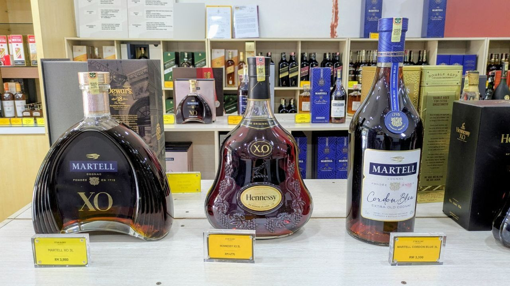
6 looked-up notes — not checked ourselves
The island has been duty-free since 2002 — and you may carry one litre of it away per person. Alcohol, tobacco and chocolate cost less than on the mainland, up to 50 per cent is the figure quoted; for cognac that does not hold, see above. The largest shop is in Tekek. Going back to the mainland, the Malaysian allowance for the duty-free islands applies: one litre of wine, spirits or beer per person, plus other goods up to RM 500, and both only after at least 48 hours on the island. This question stood here as open until 19 Aug.
Carrying a bottle all the way home means crossing three borders with three different allowances. Tioman → mainland: one litre per person. Malaysia → Singapore: no allowance at all. Singapore expressly withholds the duty-free liquor concession from anyone who cleared Malaysian immigration before arriving, so duty is payable on every drop, and the import-tax relief never covers alcohol anyway. Singapore → Germany: one litre of spirits above 22 per cent per person aged 17 or over; children do not count. Above the allowance German customs charges a flat €6.80 per litre, but only up to a goods value of €700 per traveller — an €847 bottle sits above that and is assessed by tariff, where the 19 per cent import VAT alone comes to more than €160. The three-litre bottle is too big at all three borders.
There is no through road between the villages. That leaves three ways: the coastal paths on foot, a bicycle, or a sea taxi. Tekek to ABC (Air Batang) is 3.5 kilometres of flat path, about 30 minutes; a promenade was built for it in 2017 and it runs along a protected snorkelling area, so you see fish from the path itself. A sea taxi to ABC or Salang costs RM25 to RM30, up to RM60 over longer distances, priced per person and negotiable. Small boats do not carry a card reader.
The network is better than the island's reputation, but not everywhere. Since 2023 all four Malaysian networks report 4G in every village, and an undersea cable has run to Tekek since 2018. Tioman is still a forested ridge, though: there are dead spots behind the hills and in the remote bays, and they do not disappear because the coverage is officially complete.
The return runs on the same mechanics as the outward leg. Check-in one hour before departure, the counter closes 30 minutes before, boarding pass against passport, be on the pontoon 30 minutes before. Tekek is only one of five piers on the island; the boat calls at the bays in turn, and a delay at one pier lands on everyone after it. The tide that moves the Mersing timetable every day moves the return as well — ask the day before is the advice every source here gives, and it costs nothing.
Do not pack the marine park receipt in the suitcase. It is asked for at check-in where you stay, and it covers the whole visit.
A dismantled light aircraft lies among the building materials in the village (19.08.). White with a dark blue trim line, the word Cirrus on the tail, the registration 9M-ZWP on the fuselage — 9M is Malaysia. The cabin is stripped, doors and side windows are gone, the canopy is still there, one wing lies broken off beside it. The whole thing rests on a stack of black plastic pipes and steel beams, with a backhoe loader next to it and a red-tiled shell of a house behind. No fence, no tape, no sign: it lies there like the rest of the building material.
Telegram 19 Aug, 10:22live on this page 19 Aug, 10:3412 min
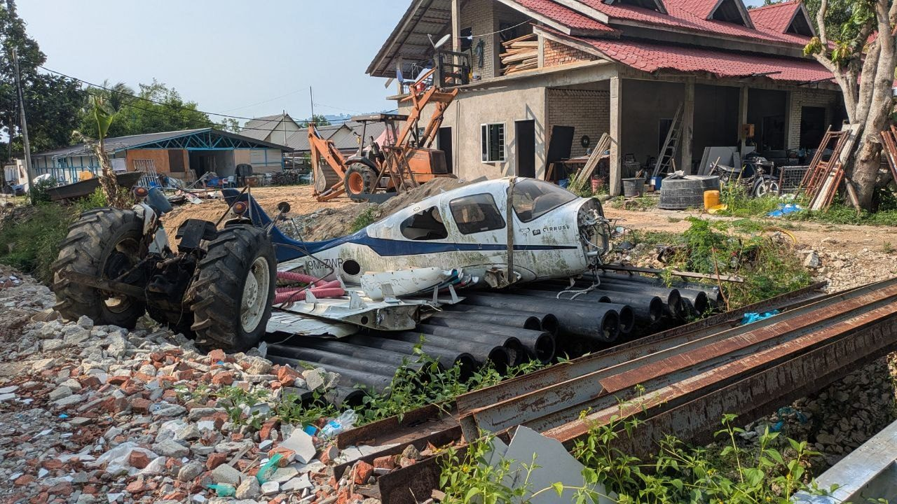
2 looked-up notes — not checked ourselves
There is no public record for this registration. Searched on 19.08. in the accident databases, in the aircraft registers and in Malaysian news in English and Malay: 9M-ZWP appears nowhere. What happened to the aircraft, when and where, is therefore not written here. What is described is what lies in the yard — not how it got there.
Nobody flies to Tioman any more; the ferry is the only way on and off the island. The airstrip sits in the middle of Tekek and has a 992-metre runway (02/20). Because of the hills at the southern end it is approached from one direction only, which is why it counts among the more demanding strips in the region. Berjaya Air served it from Singapore-Seletar and Kuala Lumpur-Subang until 2014. The last operator, SKS Airways, suspended its Tioman and Redang flights in November 2023, lost its air operator's certificate in October 2024 and shut down for good on 16 January 2025. For planning that means there is no fallback. Miss the ferry and you wait for the next ferry.
A white cat with two differently coloured eyes (19.08.). One eye blue, the other amber, and a blue collar with a bell — she belongs to someone, and she is stretched out on the artificial turf. The fourth cat of this trip after the three in Mersing, and the first one that gets out of nobody's way.
Telegram 19 Aug, 10:22live on this page 19 Aug, 10:3412 min
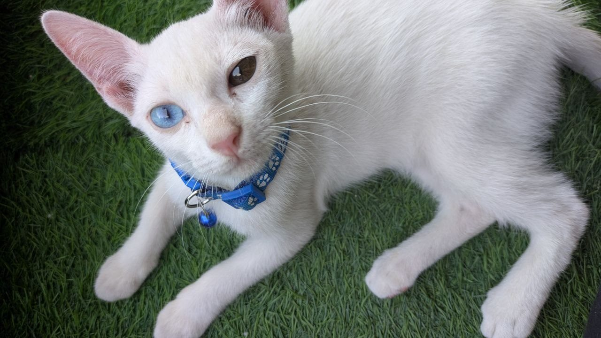
Two different eye colours on a white cat usually mean deaf on the blue side. Both traits run on the same inheritance. Of white cats with two blue eyes 60 to 80 per cent are deaf, with two non-blue eyes 10 to 20 per cent, and with one blue eye 30 to 40 per cent — and then almost always in the ear on the blue-eyed side only (figures from the English Wikipedia article Odd-eyed cat, sourced there to Richards, ASPCA Complete Guide to Cats, 1999). In practice: approach from the front and do not speak to her from the blue side. Whether this particular animal hears is not settled by that, only the odds are.
Almost every cat here has a short, often kinked tail (20.08.). Not one animal but the normal case — about half length, many with a knot at the end.
Telegram 20 Aug, 00:50live on this page 20 Aug, 01:3343 min
The tails are not docked, they grow that way. An inherited trait, not something done to the animal — which is the piece of information you need here, because it is not the first thing that comes to mind when you look. Darwin described it in 1868 for the Malay Archipelago, Siam, Pegu and Burma: tails about half the usual length, often with a knot at the end. So the trait is at least 160 years old. The cause was found in 2016, a point mutation in the HES7 gene, which lays down the vertebrae in the embryo; checked across 245 cats, and it sits in the street cats of South-East and East Asia just as it does in the Japanese Bobtail breed (Scientific Reports 6:31583, nature.com/articles/srep31583). The kink is fused tail vertebrae and does the animal no harm. It is common here because the cats breed freely, nobody breeds against it, and the trait is dominant — one parent is enough. There is a legend as well: a princess is said to have slipped her rings onto a cat's tail while bathing, and the cat bent it so nothing would fall off. It explains nothing, but people enjoy telling it.
The path to Juara is largely built, not worn (20 Aug). The board in Tekek calls it a jungle trail; underfoot it is three different surfaces. For long stretches a narrow concrete track with a herringbone pattern combed into it, just wide enough for a scooter, green closing in from both sides. Where it gets steep, a flight of concrete steps takes over, mossy, buried in dry leaves, one person wide between the undergrowth. In between there is packed earth with roots and stones. At the top the growth opens and the view runs out over the canopy to the sea. What is not here, because it was not measured: how long the walk takes and how much climbing it involves.
Telegram 20 Aug, 06:23live on this page 20 Aug, 06:3715 min
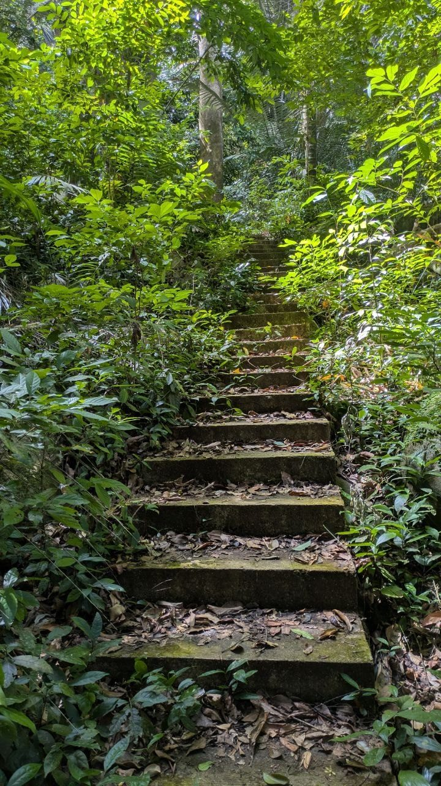
A yellow wildlife department sign stands beside the path (20 Aug). Two steel posts, a yellow metal plate, the Malaysian coat of arms at the top, the PERHILITAN emblem on the right. The text reads "RHL TIOMAN IALAH KAWASAN PERLINDUNGAN — DILARANG MASUK TANPA KEBENARAN", and below it "Arahan Ketua Pengarah Jabatan PERHILITAN". Translated: RHL Tioman is a protected area, entry without permission is prohibited, by order of the Director-General of the Wildlife Department. RHL stands for Rezab Hidupan Liar, wildlife reserve. It marks a boundary, not a route: whether the prohibition covers the path itself or the forest beside it is not written on it. The path to Juara is walkable and is walked.
Telegram 20 Aug, 02:43live on this page 20 Aug, 06:37235 min
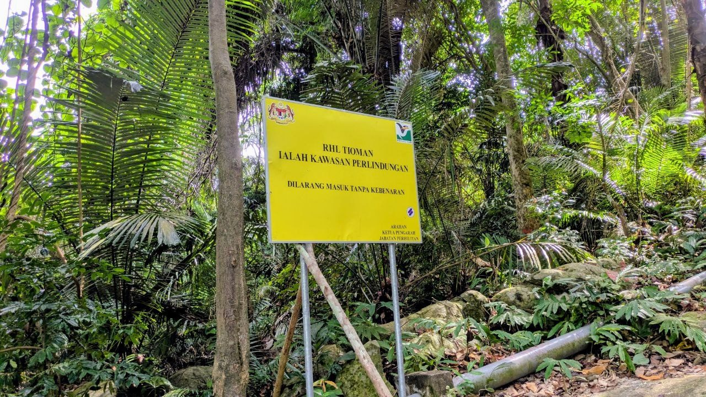
A grey pipe follows the path, and it carries red paint marks (20 Aug). Arm-thick, pale grey, resting on concrete saddles above the forest floor, bolted at intervals, splashed with red paint in places. It runs downhill in the same direction as the path and stays visible where the trail itself blurs into leaves and roots. As a handrail for the eye it beats any mark on a tree, because it neither weathers nor gets overgrown.
Telegram 20 Aug, 06:23live on this page 20 Aug, 06:3715 min
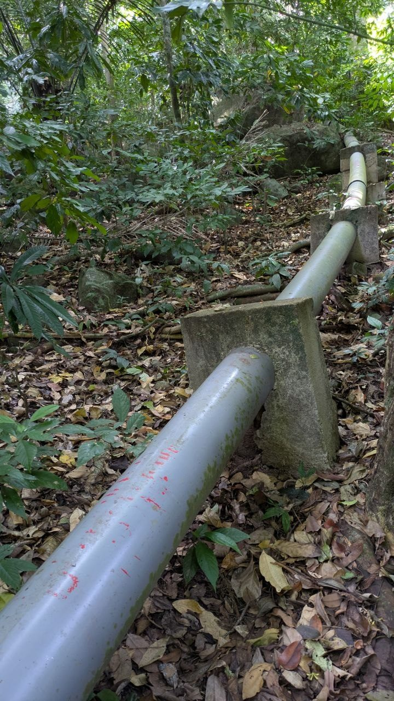
What the pipe carries is not settled here. The photographs show a pressure pipe on saddles, with couplings and clamps — that argues for a water main from the hills down to the village. A power cable would be the second possibility. Nothing on the pipe says so, no sign stands beside it, and no operator is visible in the picture. Anyone who wants to know asks in the village.
A monitor lizard lay on the path (20 Aug). Grey-brown grainy skin, heavy claws, tail stretched out towards the slope, head turned aside — it lay on the packed earth among ginger-like leaves and did not move as the path went past it. From head to the visible base of the tail it takes up a good half of the path's width.
Telegram 20 Aug, 06:23live on this page 20 Aug, 06:3715 min
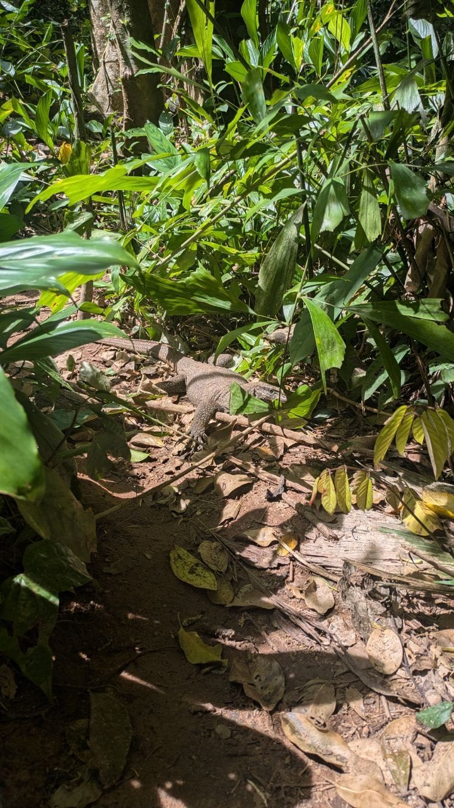
Which species it is does not belong here. On peninsular Malaysia and its islands the water monitor (Varanus salvator) is by far the most common, and it is reported on Tioman regularly. But what the picture shows is a monitor lizard, not a diagnostic feature. In practice it makes no difference: stop, keep your distance, walk on. Monitors do not attack anyone, they leave if you leave them a way out.
The path runs through closed forest, and a stream crosses it (20 Aug). Clear, barely moving water over a pale bed, palm fronds hanging down to the surface, a trunk lying across it behind. Higher up the forest closes over the path: climbers with leaves the size of a hand cover everything up to head height, and single very tall trees push out of the canopy on pale straight trunks with small crowns. This forest is not open like a park, it is a wall with a notch cut into it.
Telegram 20 Aug, 06:23live on this page 20 Aug, 06:3715 min
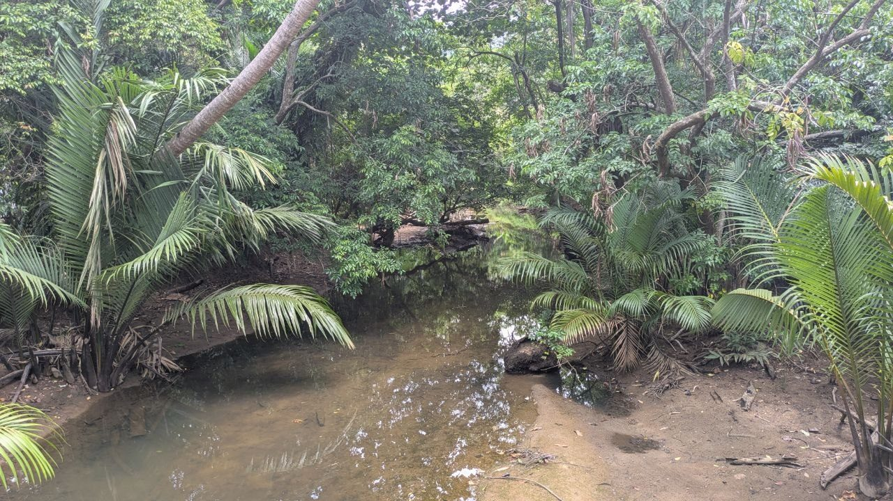
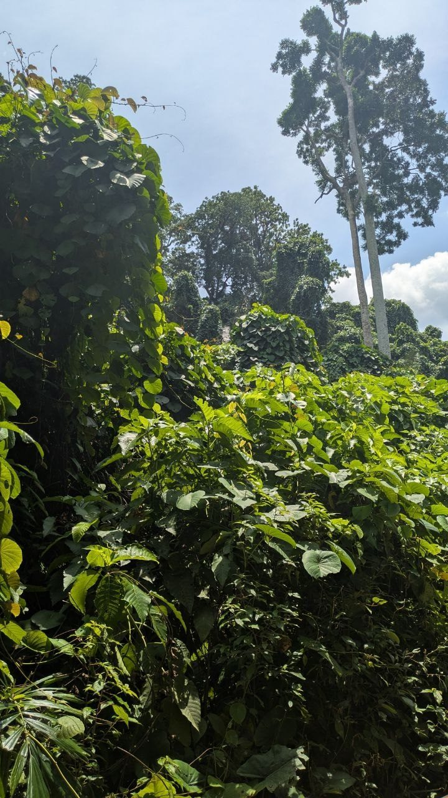
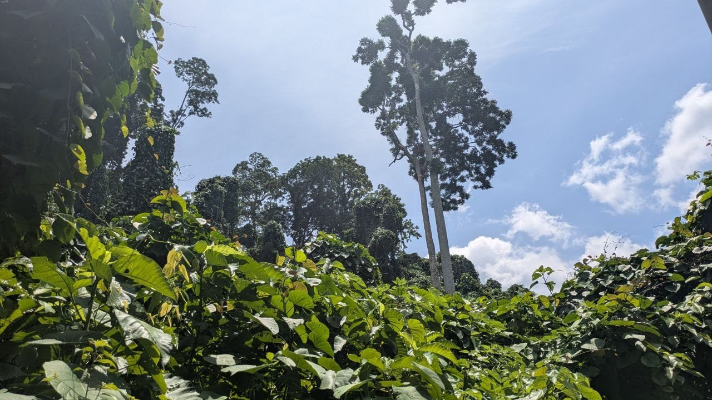
An iridescent blue butterfly lay on the forest floor (20 Aug). Wings open on the damp soil between twigs and leaf litter, the upper side dark brown at the edges and brilliant blue in the middle — not a pigment but a sheen, and it stands out of the gloom. The butterfly is damaged, part of one wing edge is missing, and it did not move.
Telegram 20 Aug, 06:23live on this page 20 Aug, 06:3715 min
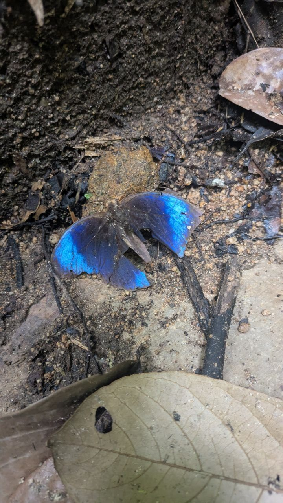
Juara greets you with a masonry arch over the village road (20 Aug). Two piers faced in brown stone, a white arch between them: "WELCOME TO JUARA VILLAGE — PULAU TIOMAN". Behind it a concrete road begins between low blue and red painted buildings with red tiled roofs. Pick-ups stand at the roadside, a motorbike with a trailer, a wheelbarrow and sandbags: building is going on here. Whoever comes out of the forest stands in the middle of the village with no transition.
Telegram 20 Aug, 06:23live on this page 20 Aug, 06:3715 min
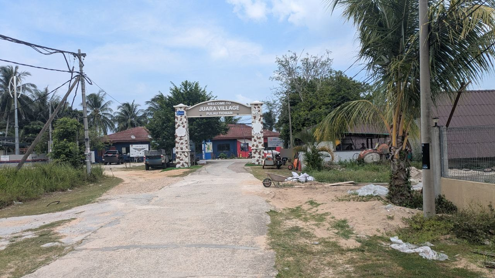
Juara has a board about the flying foxes — and it confirms what was only looked up above (20 Aug). A white metal panel at the entrance to the village, carrying a life-size flying fox with its wings spread and the heading "ISLAND FLYING FOX — Pteropus hypomelanus — Keluang Kecil". The boxes on it say: Gardeners of our forest — the animals feed on fruit, nectar and leaves, they are key pollinators of durian and disperse fig seeds. Threatened by hunting and habitat loss — a protected species, catching, killing and harassing them is illegal, Wildlife Conservation Act 2010 (Act 716). Admire from a distance — do not stand underneath the roosts, touch nothing. Living safely with bats — coexistence is safe as long as you seek no direct contact. You can be a flying fox guardian — anyone who sees an attempt to catch or harm them calls the PERHILITAN hotline 1800-88-5151; there are wildlife officers patrolling the island. At the bottom stands the author: "a project under Rimba", with support from Rufford and Mandai Nature among others.
Telegram 20 Aug, 06:23live on this page 20 Aug, 06:3715 min
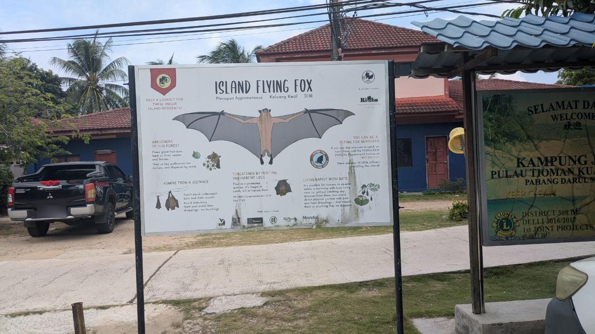
The board and the study are the same source. The figures further up — two roosts on the island, Tekek and Juara, and the first evidence that flying foxes pollinate durian — come from work by Sheema Abdul Aziz and colleagues; Rimba is the research group they work in, and the camera traps of 2015 hung in Juara. So the board carries the same hand that wrote the studies, standing at the place where the measuring was done. For us that means the species, the pollination and the no-touching rule are no longer merely looked up: they are on a sign on site, backed by the authority.
Juara faces the open sea, and you see it at once (20 Aug). Unlike the flat, mirror-smooth bay at Tekek: here surf runs onto the beach in several rows, the water is grey-green at the edge instead of turquoise, and the sand drops to the water in a broad, hard step. The bay is long and slightly curved, closed at both ends by wooded headlands that reach down to the water. Behind the line of palms stand single houses and a long restaurant with a wooden terrace and parasols, boats lying in the sand in front. Speedboats lie off the southern headland. Around midday exactly one person was on the beach.
Telegram 20 Aug, 06:23live on this page 20 Aug, 06:3715 min
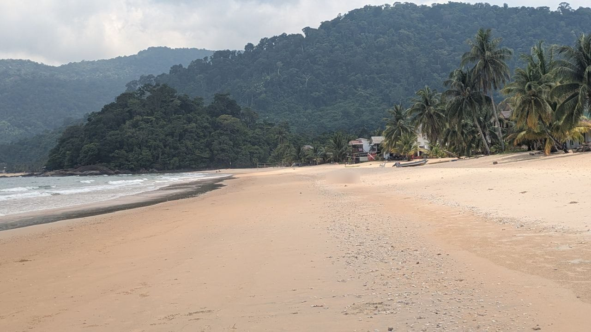
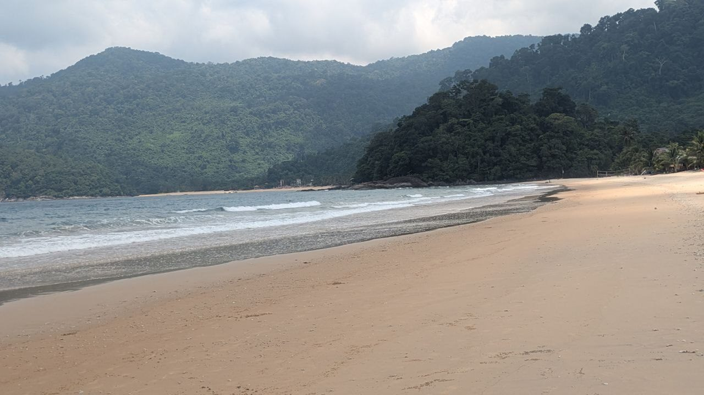
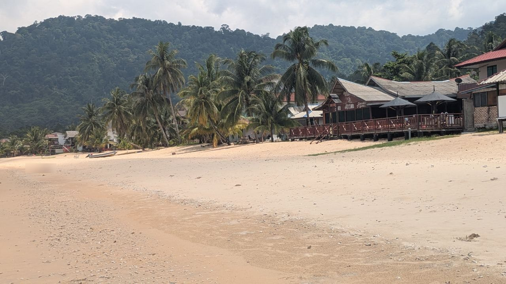
Petrol comes from the shop, in bottles, for RM 4.00 (20 Aug). No pump, no nozzle: a pale blue plastic crate stands on the tiled floor, holding about twenty used plastic bottles of yellowish fuel, each with a different screw cap. A piece of cardboard hangs off the front on two purple ribbons, hand-lettered: "PETROL RM 4.00". Behind it stand three blue jerrycans stencilled "JM PETROL", one of them fitted with a brass tap on top — that is where the bottles are filled. A water bottle stands among the petrol ones, plastic bowls and a stool are stacked beside them. It is an ordinary village shop, not a fuel dealer.
Telegram 20 Aug, 07:19live on this page 20 Aug, 07:246 min
3 looked-up notes — not checked ourselves
There is no petrol station on Tioman — this is how you buy fuel. "There aren't even any petrol kiosks here in Tioman – you get fuel from the minimarts in plastic bottles," says a report of a bike ride from Tekek to Air Batang (theoccasionaltraveller.com/tioman-cycling). Rent a scooter here and you buy its fuel in a shop, not at the roadside.
The sign names no volume; RM 4.00 for one litre is the going rate. Malaysiakini described the trade on 30 Sep 2025 and quotes the same prices: 500 ml for RM 2, one litre for RM 4 — naming Pulau Tioman, Pulau Tuba and Pulau Perhentian explicitly (malaysiakini.com/news/756524). The buyers are locals moving around their own village; the article has the line about older people riding a motorbike to the mosque, the coffee shop or the garden. The photo does not show the volume, and the bottles are of different sizes.
For us the bottle is barely dearer than a pump on the mainland. In the week of 13–19 Aug 2026 RON95 cost RM 1.99 at the pump for Malaysians — with a MyKad, under the BUDI95 scheme — and RM 3.62 for everyone else, foreigners included (paultan.org/fuel-price). So a litre out of the bottle costs a local twice the pump price and costs us about ten per cent more. The mark-up people on the island complain about lands on the residents, not on the visitor.
From Mersing to Kuala Lumpur
The coach carries a second company name, and it is Thai (22 Aug). The booking says Sanwa Express, and "Sanwa" is written large on the red flank. Above it, small and in Thai script: ซี.ไอ.เอ็น.ทัวร์ หาดใหญ่ — "C.I.N. Tour, Hat Yai" — plus a Thai mobile number. So a Malaysian long-distance coach can carry more than one name. When you are looking for your bus, go by the destination in the windscreen and by the boarding pass, not by the lettering on the side.
Telegram 22 Aug, 06:07live on this page 22 Aug, 06:2114 min
The break is at an ordinary roadside petrol station (22 Aug). No service area with a food court and rows of stalls: a white canopy over the pumps, a shop at the side, concrete all round, and oil palms and forest starting immediately behind it. The coach refuels during the break, luggage hold open. If you get off, you have the forecourt and the shop — there is nothing else at this stop.
Telegram 22 Aug, 06:07live on this page 22 Aug, 06:2114 min
The route runs up the coast road to the north first (22 Aug). A signpost at the roadside: left for "Kuantan / Segamat", right for "T. Gemok / K. Rompin", and below on green the fire station, mosque and hospital. Tanjung Gemok and Kuala Rompin both lie north of Mersing — so the coach to Kuala Lumpur does not head straight inland, it runs up the coast first. For anyone whose ferry ticket says Tanjung Gemok rather than Mersing, that is the practical part: the turn-off is on this route. (Read off the picture, not reported by us.)
Telegram 22 Aug, 06:07live on this page 22 Aug, 06:2114 min
Nine days before Merdeka the flags are on the boats as well (22 Aug). At a river harbour along the way, fishing boats and speedboats lie side by side, and lines of Malaysian flags are strung the whole length of the superstructures, dozens on every boat. White tents stand on the bank, and young mangroves grow out of the mud in front of them. A large flag hangs flat on the wheelhouse of a blue and yellow fishing boat. The same sight as on the fences in Johor and on the masts along the Mersing seafront, only on the water. Where exactly this was is not recorded here — Jens sent the pictures without naming the place.
Telegram 22 Aug, 06:07live on this page 22 Aug, 06:2114 min
In Kuala Lumpur
You come into the centre on an elevated road, and the first tower is not the one you expect (22 Aug). The last stretch runs on a concrete viaduct above the rooftops: on the right the empty carriageway with its crash barrier, on the left a wall of residential towers, and between them shells of buildings, green netting and cranes. Far back in the haze stands a slim needle — Merdeka 118. From this side you cannot see the Petronas Towers at all. (Shot from the car; the wing mirror is in the bottom right of the frame.)
Telegram 22 Aug, 11:52live on this page 22 Aug, 12:019 min
From the window you see the telecoms tower, not the Petronas Towers (22 Aug). The flat sits high enough for the view to carry across the rooftops: in the middle Menara Kuala Lumpur with its collar, to the right of it Merdeka 118 again, and in front a carpet of office towers and building sites out to the horizon. Look the other way and it drops almost vertically onto two hotel towers with a pool landscape between them — and onto a station with a curved roof, an elevated track running into it. If you are looking for somewhere to stay on Jalan Sultan Ismail: the view here gives you half the city, but not the landmark.
Telegram 22 Aug, 11:52live on this page 22 Aug, 12:019 min
Here the flag hangs down half a facade (22 Aug). What was strung out in rows on the boats and fences down south is a single enormous flag in the city: on a bank tower it hangs flat down the glass front across a good ten storeys, the company sign above it, the street with buses and hoardings below. Small flags stand in dozens on the lamp posts alongside. Nine days before 31 August this is no longer decoration in Kuala Lumpur, it is the streetscape.
Telegram 22 Aug, 11:52live on this page 22 Aug, 12:019 min
The Petronas Towers stand on an ordinary street (22 Aug). No forecourt, no flight of steps: come up from Jalan Sultan Ismail and the towers are suddenly there at an angle above you, between street lamps, a power pylon and the branches of a tree. The skybridge halfway up is clearly visible from below. A few steps further the traffic in front of Suria KLCC begins — six lanes, coaches at the kerb, palms on the central reservation. The view you know from photographs is the exception; day to day the towers stand in the rush hour.
Telegram 22 Aug, 11:52live on this page 22 Aug, 12:019 min
In the evening the towers stand behind the flags at Saloma (22 Aug). In front of the lit "Saloma Kuala Lumpur" lettering a row of Malaysian flags hangs from angled poles, and directly behind them, above the tiled roof of the low frontage, the two towers stand floodlit against the night sky. It costs nothing and there is no queue — the spot is right on the street.
Telegram 22 Aug, 11:52live on this page 22 Aug, 12:019 min
2 looked-up notes — not checked ourselves
The GoKL city bus is no longer free for foreigners, and it takes no cash. Almost every guidebook still calls it free. Since 1 January 2024 that only holds for Malaysians with a registered MyKad; foreigners pay RM1 per ride, children up to 12 travel free. Payment is cashless only — Touch 'n Go, QR code or a contactless credit or debit card, the same card that worked on the bus from JB Sentral to Larkin. For four people that is RM4 per leg, so the saving against a Grab is small. Source: DBKL, read in August 2026. Some sites still say "no charge" — they are out of date.
The line visitors want stops on Jalan Sultan Ismail. Four of the fifteen GoKL lines are meant for the city centre. The Green Line (GOKL-01) runs a loop from Suria KLCC along Jalan Ampang into Jalan Sultan Ismail and on to Bukit Bintang; its stops there are named after the buildings on the street — "Renaissance Hotel" at the Jalan Ampang junction, then "Hotel Concorde" and "Life Centre". The Blue Line (GOKL-04) comes in from Titiwangsa and stops at Bukit Nanas monorail station, halfway along Jalan Sultan Ismail, and at Dang Wangi LRT station. Both run daily from 06:00 to 23:00, every 5 to 15 minutes. If you stay on Jalan Sultan Ismail the nearest stop is about 300 metres away. In Google Maps the lines are labelled "Rapid KL Bus", not GoKL.
The Green Line is the shopping line (23 Aug). It connects Suria KLCC at the foot of the Petronas Towers with Pavilion in Bukit Bintang, and Platinum Park, Grand Hyatt and Life Centre sit in between. If shopping is what you came for, you need no second line: both addresses that every guidebook names hang off a single loop.
Telegram 23 Aug, 08:46live on this page 23 Aug, 09:1226 min
3 looked-up notes — not checked ourselves
The old town is the Purple Line's job, not the Green Line's. The Purple Line (GOKL-02) is a loop of its own between Bukit Bintang and Hab Pasar Seni: 16 stops, one round takes about 14 minutes, running daily from 06:00 to 23:00, from 07:00 on Saturdays and Sundays. Four stops matter to visitors — Central Market (Timur), Kota Raya at the edge of Chinatown, Muzium Telekom and KL Tower (Selatan). In Bukit Bintang you board at Bintang Walk or at Bukit Bintang MRT station, where the stop is called "HSBC" — the same corner the Green Line uses. Merdeka Square, Masjid Negara and the National Museum are not on this line; they are on the Red Line (GOKL-03).
Telegram 23 Aug, 08:46live on this page 23 Aug, 09:1226 min
Every GoKL line is a one-way loop — the nearest stop is often the wrong one. On a loop service the bus runs in one direction only, and that decides which stop you want. If you stay on Jalan Sultan Ismail, the Bukit Nanas monorail station is the closest at about 270 metres — but the Blue Line passes it on the way back: from there to Bukit Bintang it first runs via Sogo, Chow Kit, Titiwangsa and Kampung Baru, almost the full circle, some 20 stops. The Blue Line stop heading towards Bukit Bintang is called "Hotel Concorde" and sits 450 metres away. The Green Line barely has this problem: its loop is small, four stops from "Renaissance Hotel" to Pavilion, and if you stay seated it comes back past your starting point via Suria KLCC at the Petronas Towers. That makes it the more useful of the two for visitors, even though the Blue Line stop is closer.
The colour is not on the bus — GoKL lines are told apart by number. The four city lines are called Green, Purple, Red and Blue, but since 1 August 2023 DBKL has run them officially under numbers: GOKL 01 to 04, with the colour kept only as a suffix on the name. The entire fleet is painted green and turquoise, so all four lines look identical from outside. Waiting at the stop for a green bus means waiting for every bus. The line shows only on the display at the front, with number, colour name and destination — for the Green Line, "GOKL 01" and "KLCC". On top of that, poles on the same street can carry near-identical names: on Jalan Sultan Ismail a stop called "Renaissance Hotel", served by line 300, stands 50 metres from the Green Line stop "Berjaya Central Park / Renaissance Hotel".
The app for the bus is called GOKL and comes from the city council (23 Aug). It shows the stops near you, which lines call there and when the next bus arrives, plus how full it is. That solves exactly the problem above: because all four lines look the same and the interval swings between 5 and 15 minutes, the arrival time on your phone is the only reliable information you get at the pole. It is published by DBKL, the Kuala Lumpur city council; free for Android and iPhone, last updated in December 2025.
Telegram 23 Aug, 08:46live on this page 23 Aug, 09:1226 min
From Jalan Hang Kasturi, Merdeka 118 stands at the end of the street (23 Aug). At Central Market the street runs straight at the tower, and because only two- and three-storey shophouses stand in front of it, you get the whole thing into one frame, base to spire, with the old town in front. On the left a yellow guesthouse with Chinese characters, on the right the market buildings and a green bus, and between them the pale blue glass needle. The tower is a good kilometre away and still fills half the picture. You cannot take that shot at the Petronas Towers, because there you are standing right underneath them.
Merdeka 118 is the second-tallest building in the world, and you still cannot go up. The tower measures 678.9 metres and has 118 floors; only the Burj Khalifa in Dubai is taller. It stands on Jalan Hang Jebat next to Stadium Merdeka, where Malaysia declared its independence on 31 August 1957. That is where the name comes from, because "merdeka" means independence, and the diamond-patterned glass facade picks up the raised hand of Tunku Abdul Rahman at that very moment. The building was finished in November 2023 and inaugurated in January 2024. The observation deck "The View at 118" on level 116, at roughly 519 metres, is still not open to visitors in August 2026, and the operator gives no date. The shopping centre at the foot of the tower is missing too: in May the word was August 2026, now it is November. The only part open is the Park Hyatt from level 75 upwards, and all of its restaurants sit on that floor; whether you can ride up without a room, we could not establish. If you want to go anyway: from Central Market it is a good kilometre on foot along Jalan Hang Jebat, about fifteen minutes. By rail, take the MRT to Merdeka station on the Kajang line, exit A, and walk about ten minutes from there.
Batu Caves
The gold figure and the coloured staircase only fit into one frame from the forecourt (23 Aug). On the left the gopuram of a small temple, on the right the gold Murugan statue, and between them the staircase running up the rock face as a narrow band of red, yellow, green and blue. Step any closer and you get either the statue or the stairs, not both. The scale comes from the wall behind it anyway: grey limestone with vegetation, rising as far again above the figure. From the pond side the same statue stands above a long, continuously painted row of temple frontages, with a blue footbridge over green water in front of it.
Telegram 23 Aug, 05:22live on this page 23 Aug, 05:3311 min
At the top the view back is worth more than the staircase itself (23 Aug). From the topmost step you look out over the railings down the whole flight: the paved forecourt, coaches and car parks behind it, a motorway ramp on pillars and, in the haze, the high-rises of Kuala Lumpur. The steps are steep and have no landing to rest on; going down, you look at the city the whole way. A second, unpainted staircase runs alongside on the right.
Telegram 23 Aug, 05:22live on this page 23 Aug, 05:3311 min
There is a whole temple inside the cave, and the light comes from above (23 Aug). Behind the stairs a hall opens up, high enough to make the stalactites on the ceiling look small. Inside it stands a colourful temple tower, signposted as Sri Velayuthar Temple (Main Temple). A single shaft of light falls at an angle onto the floor through a hole in the ceiling — that is all the lighting there is in the middle of the hall. At the far end another staircase leads up to a second opening; from below all you see up there is rock, greenery and a small canopy on the rim, several storeys above your head.
Telegram 23 Aug, 05:22live on this page 23 Aug, 05:3311 min
Macaques run along the wall beside the path (23 Aug). No enclosure, no distance: a full-grown animal walks along the rock parapet right next to the path, a juvenile behind it, a third sitting on the edge. They stay exactly where the visitors walk.
Telegram 23 Aug, 05:22live on this page 23 Aug, 05:3311 min
3 looked-up notes — not checked ourselves
The place is not in Kuala Lumpur. Batu Caves belongs to Gombak in the state of Selangor, about 13 km north of the city centre. The KTM Komuter line from KL Sentral terminates right at the site, at Batu Caves station.
Two numbers to go with it: 272 steps and 42.7 metres. That is how many concrete steps lead up to the temple cave. They have only been painted in colour since August 2018 — in older photos the staircase is grey. The Murugan statue at the foot was unveiled in January 2006 and is 42.7 m tall, among the tallest of its kind. The limestone itself is more than 400 million years old.
The main cave is free, the side caves are not. No admission is charged for the large temple cave. Ramayana Cave and Cave Villa are paid separately; travel sites quote around RM 15 for 2026 and agree that payment on site is cash only. Knees and shoulders have to be covered for the climb, and sarongs are sold at the foot of the stairs for roughly RM 10 to 15. All looked up, none of it checked by us.
Eating
A mamak stall in Mersing charges RM 6.50 to RM 11.00 for a full plate, and RM 3.50 for breakfast (17 Aug). Figures off the menu board, not estimated: nasi goreng, mee goreng, kuey teow goreng and mehoon goreng are RM 6.50 each; with chicken RM 10.00, with beef RM 10.50, with mutton RM 11.50. Plain rice RM 2.50, vegetables RM 2.00, a fried egg RM 1.50. Roti canai RM 1.50, tosai RM 2.00, capati RM 2.50. Drinks run RM 1.50 to RM 3.50, teh tarik RM 2.00 hot and RM 2.50 cold — cold costs 50 sen more here, across the board. So breakfast of roti canai and teh tarik is RM 3.50 (about €0.70), and dinner for four with a plate and a drink each is RM 34 to RM 54 (€7 to €11). Takeaway adds 20 sen per box; that is the only footnote on the board.
Telegram 17 Aug, 11:19live on this page 17 Aug, 11:4224 min
2 looked-up notes — not checked ourselves
"It is on the vegetarian side of the menu" and "it is vegetarian" are not the same thing at a mamak stall. Meat-free on the board are nasi goreng, mee goreng, kuey teow goreng, mehoon goreng biasa, sayur-sayuran, telur goreng, telur dadar and the whole roti range (canai, planta, pisang, bom, tisu, naan, capati, tosai, puri kosong). Two things are nowhere on the board, though: sambal almost always contains belacan, that is shrimp paste, and the wok is not washed between dishes. If you eat strictly vegetarian, ask for "tanpa sambal" and lean towards roti and tosai rather than the fried dishes — those come off the griddle, not out of the wok.
Seven words are enough to read any mamak menu yourself. Ayam chicken · daging beef · kambing mutton · ikan fish · telur egg · sayur vegetable · goreng fried. So "nasi goreng ayam" is fried rice with chicken, and "mee goreng" is fried noodles with nothing added. Kosong means empty, so without filling, biasa plain, panas hot and sejuk cold — the last two head the two price columns on the drinks board.
Paying
On the bus from JB Sentral to Larkin you can pay contactless, by credit card and with Google Pay (17 Aug). Both were accepted, with no preparation and no local transit card. That is the practically most useful thing we learned that day: for the stretch from the border building to the long-distance bus station you need neither ringgit in cash nor an app, and the bus is far cheaper than the taxi you will otherwise be steered towards.
Telegram 17 Aug, 04:41live on this page 17 Aug, 05:4666 min
Cash is still compulsory in Malaysia — but for other things. Government fees and small stalls take nothing else. Budgeted for Tioman: RM105 marine park fee at the ferry counter in Mersing (adults RM30, children 6–12 RM15, source: Malaysian Ministry of Fisheries) and RM60 tourist tax at the accommodation. Around 35 euros together, in cash, before boarding.
"A money changer beats an ATM" — not for us it didn't (17 Aug). This stood here as a recommendation until 17 August: in Malaysia the ATM charges a foreign card fee and the money changer does not. That same day a travel credit card paid out in Mersing with no fee at all. So the rule does not hang on the country, it hangs on the card — and anyone holding one without a foreign transaction charge should not be talked into a detour. Money changers do exist, for instance inside the terminal at Larkin Sentral in Johor Bahru (Tajmuhabath, 10:00–20:00); with cash brought from home they beat the ATM, with the right card they do not.
Mersing has five banks with ATMs close together in the town centre. Maybank, Bank Rakyat and Hong Leong Bank on Jalan Ismail, the main road; Public Bank and Bank Simpanan Nasional one street over on Jalan Sulaiman. All five sit within 250 metres, and every branch has its ATM in the lobby. This matters because the Tioman marine park fee is payable in cash at the ferry counter and Mersing is the last town before it. (Locations pulled from OpenStreetMap on 17 August, not checked on the ground.)
Until 17 August this paragraph also carried the advice to use Maybank or Public Bank with a foreign card, on the grounds that Bank Rakyat and Bank Simpanan Nasional are built for Malaysian cards. That was assumed, not measured — and it was wrong. The cash came out of a Bank Simpanan Nasional machine, which is to say the very bank this page had warned against. The sentence is gone.
And the error would have cost us later, because it points forward: Tioman has exactly one cash machine, and it is a BSN (in Tekek, by the airstrip). Anyone who had believed the old advice would have arrived on the island expecting no access to cash at all, and would have had to withdraw accordingly in Mersing or hunt for a money changer. BSN is Malaysia's post office savings bank; it stands in small towns where none of the big banks does. That makes it more important to travellers, not less.
2 looked-up notes — not checked ourselves
Tipping: nowhere in Singapore or Malaysia. The reason is printed on the bill.
Singapore: 10 % service charge + 9 % GST, announced on the menu as ++ after the price — so
roughly 20 % is added anyway. Malaysia: 10 % service charge + 6 % SST on food and drink. In a
hawker centre or at a street stall there is neither, and you pay the price on the sign. Taxi
drivers expect nothing — ComfortDelGro writes on its own site that "you are not expected to
tip your driver". At Changi airport staff are not allowed to accept anything at all.
Careful with older guidebooks: the tax rates are recent. Singapore's GST has only been at 9 % since 1 Jan 2024 (8 % before that). In Malaysia the general service tax rose to 8 % in March 2024, while food and drink stayed at 6 % — including after the extension in July 2025. Anyone reading 8 % for restaurants is reading a wrong number.
Open, still to come: whether cards also work for the ferry ticket, in shops on Tioman and for the tours in Sabah.
Power, internet, phone
2 looked-up notes — not checked ourselves
Bahrain, Singapore and Malaysia all use type G — the British plug with three flat pins. A German Schuko plug fits the wall in none of the three. Voltage 230 V (Bahrain, Singapore) and 240 V (Malaysia), 50 Hz everywhere. Without an adapter it is three weeks of power bank, and you only notice on the first evening, when all four devices are flat. Adapters are available in duty-free in Bahrain, at Changi and in any Malaysian electronics shop.
At Bahrain airport there are charging points built into the seating rows at the gates,
past security, USB right at the seat — no adapter needed for those. Before security, in the
public area, there are only ordinary sockets. Wi-Fi BIA Free WiFi, no registration.
Malaysian long-distance buses have a USB socket at the seat (17 Aug). Two USB-A ports, set into the side panel under the armrest, so below seat level and not at eye height — you only find them if you go looking. Which means your own cable belongs in your hand luggage and not in the suitcase in the hold. The socket was reported with a photo from a bus leaving Larkin Sentral; exactly which line it was is not established.
Telegram 17 Aug, 06:21live on this page 17 Aug, 06:3817 min
There are CCTV cameras in the coach, and the complaints number is stuck to the windscreen (17 Aug). Two dome cameras in the ceiling above the aisle, plus a sticker from the Malaysian transport ministry reading "Talian Aduan MOT" with a freephone number and a QR code. If you are wondering how regulated Malaysian long-distance coach travel is: regulated enough that the supervising authority puts its complaints desk in every passenger's line of sight. For a traveller that reads as reassuring rather than bureaucratic.
Telegram 17 Aug, 09:37live on this page 17 Aug, 09:5013 min
CelcomDigi could not be bought online. The order process broke reproducibly at the address entry. It works at a counter with the original passport; places to buy in Kuala Lumpur (Pavilion, Suria KLCC) and at KLIA airport.
Singtel hi!Tourist is limited to three per passport. After that the passport is used up and the next card has to go on somebody else's.
The Singapore eSIM does work in Malaysia — the table was right, not the small print
(17 Aug). The plan is Singtel hi!Tourist eSIM, S$15 (about 10 euros), 30 days, 500 GB,
and the country list on the sales page names Malaysia, Indonesia, Thailand and Hong Kong
alongside Singapore. That was exactly the open question: the same terms say under 2.3 only
"local calls, local SMS, local data" — a Singapore-only card, in other words. The country
table is what holds. You buy and activate it online before the trip and install it by QR
code; it is registered against your passport, and one passport takes no more than three.
Telegram 17 Aug, 10:58live on this page 17 Aug, 11:024 min
What the plan cannot do: make calls. Voice is barred on the tourist cards, data only. For a phone number that can be reached, the group needs either a home card in roaming or a local card on a second passport. If you have to call a bank or a government office, plan for it — over data it only works as long as the other end accepts a messenger.
Open, still to come: how the network holds up on Tioman and in Sabah. On the island it is thin by all accounts, and 500 GB are worth nothing where there is no mast.
What we had planned wrong beforehand
The most useful part for other people, because these mistakes have nothing to do with us.
The international driving permit can only be obtained inside Germany. German missions abroad explicitly do not issue it. Malaysia requires it in addition to the German licence, and so do the car rental firms; without it, a fine of RM300–1,000. Forget it at home and you cannot drive yourself for the entire trip. The substitute is day tours with a driver — no great loss for us, because only one destination depended on it.
"One provider can't" does not mean "it can't be done". Because ComfortDelGro no longer allows cross-border rides to be booked in advance, our planning said "nothing is bookable across the border" for days. Grab has had its own licence since May 2026. After a refusal, ask about the category, do not generalise the refusal.
Our own itinerary was older than the bookings. For six days our schedule claimed a leg was not booked — the ticket had been in the folder since eighteen minutes after it was issued. Before making any statement about the trip, read the folder with the documents, never the summary.
The departure port was different in the order email and on the ticket. The email said Tanjung Gemok, the boarding pass says Mersing — 40 kilometres apart, two different states, and a whole travel day hangs on it. The ticket counts, not the order.
Timeline
| Date | Where | Covered above under |
|---|---|---|
| 15 Aug | Frankfurt → Bahrain (stopover) → Singapore | Power, internet, phone |
| 16 Aug | Singapore, Little India · Gardens by the Bay | Getting around Singapore |
| 17 Aug | Border to Johor Bahru · Larkin Sentral · bus to Mersing | Border · Paying |
| 18–21 Aug | Tioman | — |
| 22–24 Aug | Kuala Lumpur | — |
| 25–28 Aug | Sandakan, Sabah | — |
| 29 Aug – 3 Sep | Kota Kinabalu | — |
| 4–5 Sep | Kudat, Tip of Borneo | — |
| 5–7 Sep | Singapore → Bahrain → Frankfurt | — |
Who writes this
There are four of us travelling — three weeks of Singapore, the peninsula and Borneo. None of us typed this page. Jens sends a Telegram message when something has worked; the rest is done by Otto, an assistant on a mini-PC in a basement in Karlstein am Main, Germany: look it up, place it, hold it against the notes so far, check it for private data, rebuild the page, publish.
That is not a party trick on the side, it is the job. Jens Laufer works as a Forward Deployed Engineer — he takes models out of the demo and into the place where the real data, the real workflows and the real failures are — and half of that by now is Harness Engineering: not building the model, but building the scaffolding around it in which it works unattended. This trip is the stress test. For three weeks, whatever cannot be commissioned from a phone does not happen.
One thing belongs here, because the page would otherwise claim more than it delivers. Jens reads every version, and his most frequent objection is the language: it still sounds too much like AI to him. Too smooth, too many invented words, sentences that read like text rather than like somebody telling you something. He is strict about it — stricter than about anything else on this page. It says so here because a page meant to show what a setup like this can do should also say where it is not good yet.
How the setup works, with all the numbers → Jens on LinkedIn